العمليات الأساسية في الكوهومولوجيا التفاضلية
Abstract
نوصّف العمليات الأولية في الكوهومولوجيا التفاضلية باستعمال المكدسات، ونوضح ذلك بصقل تفاضلي صريح لمربعات Steenrod ولقوى Steenrod. ويتطلب ذلك تداخلاً دقيقاً بين الكوهومولوجيا الصحيحة والنسبية وبترديد p، وكذلك الكوهومولوجيا ذات معاملات U(1) والأشكال التفاضلية. وفي أثناء ذلك نطوّر تقنيات حسابية في الكوهومولوجيا التفاضلية، منها تحليل Künneth، وهي تقنيات ينبغي أن تكون نافعة في ذاتها، كما تشير إلى تطبيقات في الهندسة العليا والفيزياء الرياضية.
Contents
2 صياغة العمليات الأولية في الكوهومولوجيا التفاضلية
2.1 عمليات الكوهومولوجيا الكلاسيكية عبر السلاسل والسلاسل المشتركة وعبر أفعال الزمر المتماثلة
2.2 المكدسات المرتبطة بالكوهومولوجيا التفاضلية
2.3 عمليات الكوهومولوجيا التفاضلية العامة
3 عمليات ستينرود التفاضلية
3.1 العلاقة مع جداء الكأس لـ Deligne-Beilinson
3.2 خصائص عمليات ستينرود التفاضلية
3.3 التطبيقات
1 مقدمة
عمليات الكوهومولوجيا ذات المعاملات في زمرة G هي تحويلات طبيعية من الشكل Hn(−;G) →Hm(−;G). وبحسب قابلية التمثيل لبراون ولمّة يونيدا يكافئ ذلك حساب زمرة الكوهومولوجيا الشاملة لفضاءات إيلينبرغ-ماكلين Hm(K(G,n);G)، وهو بدوره يكافئ حساب فئات الهوموتوبيا للخرائط [K(G,n),K(G,m)]. ومن ثم فإن جميع عمليات الكوهومولوجيا ذات الدرجة الثابتة تُستوعب بحساب كوهومولوجيا فضاء إيلينبرغ-ماكلين K(G,n). ولاستيعاب جميع عمليات الكوهومولوجيا ينبغي، بوضوح، تغيير كل من m و n. انظر [MT68] [St62] لعرضين تفصيليين.
نهتم هنا بالكوهومولوجيا التفاضلية (انظر [CS85] [Fr00] [HS05] [SS08][Bu12] [BS10] [Sc13] [BB14]). والبديل من فضاءات إيلينبرغ-ماكلين هو مكدسات متعددة للحزم U(1) العليا (أي الحزم n) المزودة باتصالات. لذلك فإن عمليات الكوهومولوجيا ستتضمن الكوهومولوجيا التفاضلية لهذه المكدسات، ويمكن وصف هذه العملية عبر فضاءات الخرائط بين المكدسات. ومن أجل الصقلات التفاضلية سنحتاج إلى دراسة مورفزمات المكدسات
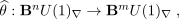
حيث يمثل BnU(1)∇ مكدس المودولي للحزم n المزودة باتصال، كما دُرس في [FSSt12][FSS13][FSS15a]. وستصف فئات الهوموتوبيا لهذه المورفزمات بدورها زمرة الكوهومولوجيا التفاضليةأحد الأهداف الرئيسية لهذه الورقة هو توصيف هذه الزمرة لقيم مختلفة لـ k و n. وسيؤدي ذلك بدوره إلى توصيف كامل لعمليات الكوهومولوجيا الأولية في الكوهومولوجيا التفاضلية.
وبما أن عمليات الكوهومولوجيا التفاضلية، كما سنرى، تنطوي على معاملات مختلفة، نجد أنه من المفيد أن نشير إلى العلاقات المتبادلة الموجودة بالفعل بين هذه (وجدنا المناقشة في [FFG86] مفيدة بشكل خاص). وهذا يجب أن يساعدنا أيضًا على تطوير بعض الحدس للحالة التفاضلية الكاملة. لاحظ أنه إذا كانت المعاملات إحدى الزمرتين ℤ,ℤ∕p أو ℚ، أي زمرة أبيلية، فإن مجموعة جميع عمليات الكوهومولوجيا Hm(K(G,n);G)، حيث تنتمي G و G′إلى المجموعة المذكورة أعلاه، تكون هي أيضاً أبيلية.
العمليات من ℤ∕p إلى ℚ. نعلم أن Hq(K(G,n);ℚ) = 0 لكل q > 0 عندما تكون G زمرة أبيلية منتهية، أي في حالتنا ℤ∕p. وهذا يبيّن وجود عمليات كوهومولوجية غير تافهة من معاملات ℤ∕p إلى ℚ-المعاملات.
العمليات من ℤ إلى ℚ. نميز بين الحالتين الفردية والزوجية. ففي الحالة الأولى، تكون Hq(K(ℤ,2n+ 1);ℚ) غير منعدمة فقط عندما q = 2n + 1، وعندئذ تساوي ℚ، ومولدها هو صورة الفئة الأساسية ι تحت التشاكل r : H2n+1(K(ℤ,2n+ 1);ℤ) →H2n+1(K(ℤ,2n+ 1);ℚ) المستحث من التضمين الطبيعي ℤ
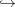
ℚ. ومن ثم فإن كل عملية من فئة صحيحة فردية الدرجة إلى الكوهومولوجيا النسبية تحفظ الدرجة، أي تأخذ α ∈H2n+1(X;ℤ) إلى λr(α) ∈H2n+1(X;ℚ) لعدد نسبي ثابت λ يقابل العملية. أما في الحالة الزوجية فلدينا Hq(K(ℤ,2n);ℚ) = ℚ[r(ι)]، ولذلك تُعطى كل عملية من الكوهومولوجيا الصحيحة الزوجية إلى الكوهومولوجيا النسبية بالقوة α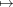
λαk، حيث تحدد العملية كلاً من k ∈ℤ و λ ∈ℚ.العمليات من ℚ إلى ℚ. يمكن حساب الزمرة Hn(K(ℚ,m);ℚ) مباشرةً، مثلاً باستعمال متتالية Serre الطيفية. في هذه الحالة تسند أي عملية كوهومولوجية إلى عنصر α ∈Hn(X;ℚ) العنصر λαk ∈Hnk(X;ℚ)، حيث يكون كل من k ∈ℤ و λ ∈ℚ ثابتاً تحدده العملية.
العمليات من H∗(−)dR إلى H∗(−)dR. من ناحية أخرى، يمكن استنتاج العمليات في كوهومولوجيا دي رام من نظيراتها في الكوهومولوجيا النسبية عبر مبرهنة دي رام. ومن ثم ينبغي توصيف عمليات دي رام بصورة منهجية. فزمر كوهومولوجيا دي رام وزمر الكوهومولوجيا النسبية لها نفس البنية الجبرية الأساسية.
العمليات من ℤ∕p إلى ℤ∕p. من الناحيتين الجبرية والهوموتوبية، لعل هذه العمليات هي الأكثر دراسة. نبدأ بالعمليات الحافظة للدرجة. فمن Hn(K(ℤ∕p;n);ℤ∕p) = ℤ∕p ينتج أن كل عملية من هذا النوع حافظة للدرجة هي ضرب بسلم في ℤ∕p. ثم من Hn+1(K(ℤ∕p,n);ℤ∕p) = ℤ∕p ينتج وجود عملية وحيدة ترفع الدرجة بواحد وتولّد جميع هذه العمليات. ويُعطى هذا المولد بالتشاكل الرابط βp، أي تشاكل بوكشتاين لمتتالية المعاملات ℤ∕p
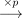
ℤ∕p2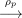
ℤ∕p.لاحظ أنه بما أن Hq(K(ℤ∕p,n);ℤ∕p) = 0 لـ n + 1 < q < n + 2p −2، فإنه لا توجد عمليات ترفع الدرجة بمقدار 2,3,4,
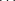
,2p−3. والدرجة التالية التي تظهر فيها عملية غير صفرية هي البعد 2p−1، حيث توجد عملية فريدة تتوافق مع Hn+2p−2(K(ℤ∕p,n);ℤ∕p) = ℤ∕p عندما n > p، وهي قوة Steenrod المختزلة P1. الدرجات التالية Hn+2p−1((K(ℤ∕p,n);ℤ∕p) = ℤ∕p و Hn+2p(K(ℤ∕p,n);ℤ∕p) = ℤ∕p⊕ℤ∕p يتوافق مع مجموعات من العمليات βpP1، P1βp و βpP1βp. والدرجة غير التافهة التالية هي 4p −4 المقابلة للقوة المختزلة P2.يُعطى التصنيف الكامل لهذه العمليات عندما ℤ∕p بدراسة جبر Steenrod بترديد p، أي 𝒜p (انظر [St62] [Ca54] [Mi58] [Ma70]).
العمليات من ℤ إلى ℤ∕p. المثال الرئيسي هنا هو ρp : ℤ →ℤ∕p، أي الاختزال بترديد p، حيث p عدد أولي. وهذا يستحث عملية تحمل الاسم نفسه في الكوهومولوجيا ρp : Hn(−;ℤ) →Hn(−;ℤ∕p).
العمليات من ℤ∕p إلى ℤ. لننظر إلى β، أي التشاكلات الرابطة، أو تشاكل بوكشتاين، لمتتالية المعاملات ℤℤℤ∕p. بالنسبة إلى الفئة x ∈Hn(X;ℤ∕p)، تكون الفئة β(x) عنصراً صحيحاً في Hn+1(X;ℤ∕p)، أي إنها تنتمي إلى صورة تشاكل الاختزال بترديد p ρp : Hn+1(X;ℤ) →Hn+1(X;ℤ∕p). لاحظ أن جميع العمليات من ℤ∕p إلى ℤ ومن ℤ إلى ℤ∕p مبنية من مجموعات من ρp أو β مع قوى Steenrod (أو مربعاته عندما p = 2).
لما كانت الكوهومولوجيا التفاضلية مبنية من الكوهومولوجيا الصحيحة ومن معطيات الأشكال التفاضلية، فإن عمليات الكوهومولوجيا في كلا السياقين ضرورية لبناء عمليات الكوهومولوجيا المصقولة. وقد وجدنا، على نحو مفاجئ إلى حد ما، أن أياً منهما لم يُدرس بالقدر الذي قد يتوقعه المرء لمفاهيم كلاسيكية كهذه.
العمليات من ℤ إلى ℤ. دُرست عمليات الكوهومولوجيا الصحيحة K(ℤ,n) →K(ℤ,m) ابتداءً من Cartan [Ca54]. وقد دُرست البنية الجبرية في [Ma70] [Ko82] [Pe04]. ومع ذلك، لا يبدو أن هناك توصيفًا كاملاً، على الأقل في الحالة غير المستقرة، ولا تبدو الحسابات الصريحة متاحة في جميع الحالات. ولعل الاستثناء هو [Pe10]، حيث تُستعمل متتالية Leray-Serre الطيفية للتلييف المساري-الحلقي K(ℤ,n) →PK(ℤ,n + 1) →K(ℤ,n + 1) لحساب الزمر Hm(K(ℤ,n);ℤ) من أجل 2 ≤n ≤7 و 2 ≤m ≤13، وهو أمر ينبغي أن يكون مفيداً في التطبيقات. ومن ثم، وباستثناء الوصول إلى عمليات ℤ عبر جبر ستينرود، لا يبدو أن الكثير معروف.
العمليات من Ωn إلى Ωm. بخلاف كل ما سبق، لا تقع هذه العمليات على مستوى الكوهومولوجيا، بل تحدث على مستوى الأشكال التفاضلية. بالنسبة إلى المتشعبات المدمجة، فإن العمليات الخطية على الأشكال التفاضلية Ωn(X) →Ωm(X) التي تتبادل مع الديفيومورفزمات دُرست عند Palais [Pa59] من منظور التحليل الدالي. وقد مُدّ ذلك إلى الحالة غير المدمجة في [Jo71]. وتُدرس عمليات أعم في سياق أوسع بكثير في [KMS93]، لكن العمليات المتعلقة بنا لا تزال خطية (ونحن مهتمون بالعمليات غير الخطية أيضًا)؛ حيث يتبين أن جميع العمليات التي ترفع درجة الشكل بمقدار واحد هي مضاعفات للمشتق الخارجي، وتتبع الخطية من الطبيعية. وفي الآونة الأخيرة دُرست العمليات، الخطية وغير الخطية، المؤثرة في الأشكال 1 (أي الاتصالات) في [FH13]، ثم عُممت إلى الأشكال التفاضلية من جميع الدرجات في [NS15]. وسنستفيد من ذلك في بناء عمليات كوهومولوجية على الأشكال التفاضلية المغلقة Ωcl∗ داخل المكدسات.
لا يلزم أن تكون عمليات الكوهومولوجيا تشاكلات. فخريطة القوة Hn(X;G) →H2n(X;G) عملية كوهومولوجية بالطبيعية، لكنها بوضوح ليست تشاكلاً. غير أن هذه الخريطة تصبح تشاكلاً عندما G = ℤ∕p، وهي مثال لعملية Steenrod في الدرجة العليا.
قد يتساءل المرء عما إذا كان في دراسة عمليات الكوهومولوجيا التفاضلية أي فائدة، إذ إننا في النهاية نتعامل مع عمليات تنشأ من معاملات ℤ∕p، في حين أن المعطيات الإضافية في الكوهومولوجيا التفاضلية هي معطيات أشكال دي رام. ومن جهة أخرى قد يتوقع المرء أن يكون للصقل التفاضلي أثر ما في عمليات الكوهومولوجيا، إذ توجد صقلات تفاضلية لفئات كوهومولوجية مميزة أدت إلى قدر كبير من الفائدة والتطبيقات (انظر [HS05] [SSS12] [FSSt12] [FSS13] [FSS15a] [FSS15b]). ويتبين أن النتيجة العامة تقع بين هذين الطرفين. فعلى سبيل المثال نجد أن
- لا تقبل مربعات Steenrod الزوجية صقلاً تفاضلياً.
-
أما مربعات Steenrod الفردية فتصقل على الصورة 2m+1 = jΓ2Sq2mρ2I, حيث
- I :
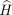
∗(−;ℤ) →H∗(−;ℤ) هي خريطة التكامل، المقابلة لـ “نزع الصقل”. - Γp مستحثة من تمثيل ℤ∕pU(1) بوصفه جذور الوحدة.
- j هي التضمين المسطح H∗(−,U(1))∗(−;ℤ)، أي تضمين الحزم المسطحة في الحزم ذات الاتصال.
- I :
لاحظ أن الحالة الخاصة لمربعات Steenrod في الدرجة التي تقل بواحد عن الدرجة العليا دُرست عند Gomi [Go08] (انظر أيضاً [Bu12]، القسم 3.4) وربطت بجداء الكأس لـ Deligne-Beilinson. ومن ثم يمكن النظر إلى جزء من عملنا على أنه تعميم لهذه العلاقة إلى جميع الدرجات.
يتم تنظيم الورقة على النحو التالي. القسمان الفرعيان الأولان من القسم 2 يهدفان إلى إعطاء عرض موجّه للمكوّنين الرئيسيين اللذين نسعى إلى دمجهما دمجاً متماسكاً، وهما عمليات Steenrod والمكدسات. في القسم 2.1 نستذكر تعريف مربعات Steenrod وقوى Steenrod من وجهتي نظر: عبر السلاسل والسلاسل المشتركة، وعبر أفعال الزمر المتماثلة. ونقدم ذلك على نحو يساعد القارئ على تتبع الإنشاءات اللاحقة مفاهيمياً. ونستذكر هنا أيضاً الرفوع الصحيحة لمربعات Steenrod، وهي ضرورية للصقلات التفاضلية. في القسم 2.2 نهيئ جهاز المكدسات، ملائماً لسياق الكوهومولوجيا التفاضلية، الذي نحتاجه لصياغة الصقلات التفاضلية. وتعرض النتائج العامة الرئيسية في القسم 2.3، حيث نقدم مبرهنة التوصيف (المبرهنة 6) لعمليات الكوهومولوجيا التفاضلية العامة. ويتطلب ذلك تفاعلاً بين عمليات الكوهومولوجيا الصحيحة والعمليات على الأشكال التفاضلية.
نطبق هذه الصياغة على عمليات Steenrod في القسم 3، حيث تعطى الحالة الزوجية في القضية 9، بينما تعطى الحالة الفردية في النتيجة 11. وفي القسم 3.1 نبحث ما إذا كانت مربعات Steenrod التفاضلية مرتبطة بتبادلية جداء الكأس لـ Deligne-Beilinson حتى الهوموتوبيا [De71] [Be86] (انظر أيضاً [Br93])، وذلك صقلاً لوجهة النظر الكلاسيكية في مربعات Steenrod المعروضة في القسم 2.1. ويقود هذا إلى تعميم [Go08] على مربعات Steenrod بجميع الدرجات وعلى مستوى المكدسات. وفي الطريق نثبت تحليلاً من نوع Kunneth للكوهومولوجيا التفاضلية (القضية 16)، وهو جدير بالاهتمام في ذاته بوصفه أداة حسابية عامة. وتعرض خصائص عمليات Steenrod المصقولة في القسم 3.2. ومعظم خصائص العمليات الكلاسيكية تبقى صحيحة، باستثناء الهوية وصيغة Cartan؛ ويمكن إرجاع كلا الاستثناءين إلى أن مربعات Steenrod الزوجية لا تقبل الصقل. وأخيراً نقدم تطبيقات عملياتنا في القسم 3.3، حيث نعرض أيضاً صيغة خاصة من الاستقرار لهذه العمليات (القضية 24)، ونختم بتطبيقات لافتة في الفيزياء عبر الهندسة العليا.
2 صياغة العمليات الأولية في الكوهومولوجيا التفاضلية
2.1 عمليات الكوهومولوجيا الكلاسيكية عبر السلاسل والسلاسل المشتركة وعبر أفعال الزمر المتماثلة
المادة الواردة في هذا القسم معيارية ([MT68] [St62])، لكننا نوردها لأنها تساعد على الفهم المفاهيمي لإنشاءاتنا اللاحقة، نظراً إلى تشابه البنية المتدخلة فيها.
تُقصد مربعات Steenrod في الأصل إلى تربيع فئة x، أي فئة |x|= n من درجة العملية نفسها، أي Sqi(x) = x2 عندما i = n. أما العمليات ذات الدرجات الأدنى Sqi و 0 ≤i ≤n −1 فتقيس بدقة مقدار انحراف تبادلية جداء الكأس حتى الهوموتوبيا عن التبادلية الصارمة. فجداء الكأس ليس تبادلياً، حتى بالتدرج، على مستوى السلاسل، ويُقاس هذا العائق بعمليات Steenrod. وسنتبع عن كثب العرض في [Br] (الفصل 3)، إذ يقدم شرحاً كاشفاً لكيفية ظهور التبادلية في مقابل التبادلية حتى الهوموتوبيا.
تؤدي الخريطة القطرية Δ : X →X ×X إلى مثلث تبادلي صارم على مستوى السلاسل
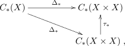
حيث τ∗ هي الخريطة المستحثة من خريطة التبديل τ : X ×X →X ×X المعطاة بـ τ(x,y) = (y,x). أما خريطة ألكسندر-ويتني
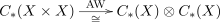
, فتعرّف تكافؤاً بين معقدات السلاسل، لكنها تبادلية فقط حتى الهوموتوبيا وليست تبادلية بصرامة (انظر [Mc95]). وبالمثنوية إلى السلاسل المشتركة يمكننا تعريف جداء الكأس بوساطة (a∪b)(x) = (a⊗b)(AW(Δ∗(x))). وينتقل أثر التبادلية حتى الهوموتوبيا لخريطة ألكسندر-ويتني إلى جداء الكأس، فنحصل على المخطط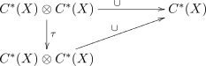
وهو تبادلي حتى الهوموتوبيا فقط، لا تبادلي بصرامة. وهذا يستحث المخطط التبادلي على مستوى الكوهومولوجيا بترديد 2
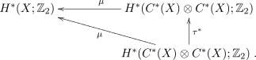
وهذا ليس ضرباً بعد؛ إذ يحتاج المرء من أجل الضرب إلى تشاكل Künneth H∗(X ×X;ℤ∕2) ≃H∗(C∗(X) ⊗C∗(X);ℤ2)
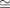
H∗(X;ℤ2) ⊗H∗(X;ℤ2).إن التبادلية حتى الهوموتوبيا تتيح قدراً كبيراً من البنية، ينشأ من هوموتوبيات السلاسل ثم من هوموتوبيات بين هذه الهوموتوبيات، وصولاً إلى أن تستنفد الأبعاد. فعلى المستوى الأول نحصل على هوموتوبيا سلاسل ∪1 بين ∪τ و ∪تقابل الهوموتوبيا ∪τ ≃∪، بحيث b∪a−a∪b = ∪τ(a⊗b) −∪(a×b) = d∪1(a⊗b) + ∪1d(a⊗b). الآن بالنظر إلى الحالة b = a، نحصل على a ⊗a −a ⊗a = 0 = d ∪1(a ⊗a) + ∪1d(a ⊗a). وإذا أخذنا كذلك a كدورة مشتركة، أي da = 0، فإن d(a ⊗a) = 0 أيضاً. وحينئذ يبقى عامل واحد، d ∪1(a ⊗a) = 0، يحدد فئة كوهومولوجية في المستوى الأدنى التالي
تُحصل مربعات Steenrod الدنيا من هوموتوبيات السلاسل العليا الناتجة عن تكرار العملية أعلاه إلى ∪i+1 : ∪iτ ≃∪i لكل i ≥0. وهذه تعطي بقية مربعات Steenrod
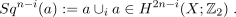
وتتوقف العملية بعد n خطوة، عندما نصل إلى Sq0، وهي الهوية.
تعمل قوى Steenrod Pi، عند عدد أولي p، على نحو مشابه باستبدال τ بعملية التبديل الدورية على جداء p نسخ من الفضاء X. ثم يترجم ذلك بالمثل إلى خريطة قوة على فئات الكوهومولوجيا.
لاحظ أن بناء عمليات Steenrod لا يتطلب بالضرورة التعامل مع معقدات السلاسل. ففي الحقيقة يوجد بناء مناظر في الفضاءات الطوبولوجية، أي في الفئة 𝒯op، يستعمل قابلية تمثيل الكوهومولوجيا بفضاءات Eilenberg-MacLane (انظر مثلاً [Ha02]). وكما في الوصف السابق، يبدأ المرء بمخطط تبادلي حتى الهوموتوبيا
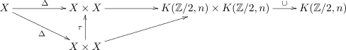
يصف تبادلية جداء الكأس حتى الهوموتوبيا. وبما أننا نعنى بجداء الكأس التربيعي، نختار الخرائط إلى فضاءات Eilenberg-MacLane لتُعطى بالخريطة نفسها على كل عامل في الجداء، أي
ثم تمثل هوموتوبيا من هذه الخريطة إلى نفسها حلقة، أي خريطة (مناظرة لهوموتوبيا السلاسل ∪1 بالطريقة المذكورة أعلاه)
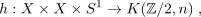
المعرّفة عبر التكافؤ Map(S1,Map(X ×X,K(ℤ∕2,n)) ≃Map(S1 ×X ×X,K(ℤ∕2)). وباختيار h غير تافهة، يمكن تكرار هذه العملية وتمديد الخريطة إلى الكرة اللانهائية الأبعاد S∞، وهي عملية تناظر اختيار الهوموتوبيات العليا في المقاربة السابقة. وباستخدام تناظر جداء الكأس يمكن اختيار هذه الخريطة بحيث تتبادل مع فعل ℤ∕2 على X ×X (المعطى بتبديل العوامل) وفعل ℤ∕2 على S∞ (المعطى بالفعل المضاد). عندئذ تنحدر الخريطة h إلى خريطة على خارج الفعل القطري
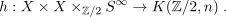
وبأخذ الفعل ℤ∕2 التافه على X نرى أن الخريطة القطرية Δ : X →X ×X متكافئة بالنسبة إلى هذا الفعل. ثم تستحث الخريطة نفسها خريطة على المدارات الهوموتوبية المقابلة، ويمكن تمثيل البناء كله بيانياً كما يلي. فالخريطة h هي الخريطة الشاملة التي تملأ المخطط التبادلي حتى الهوموتوبيا
في الواقع، يمكن تلخيص هذا المخطط من حيث (∞,1)-كوليمات من خلال تحديد الخريطة h على أنها ناشئة عن الخاصية العالمية لـ (∞,1)-كوليمات. على الرغم من أن بناء الخريطة h كلاسيكي تمامًا، إلا أن تفسيرها كخريطة عالمية تملأ المخطط التبادلي حتى الهوموتوبيا يبدو فكرة جديدة؛ وهي فكرة نعدّها ذات ميزة مفاهيمية واضحة. سنستفيد من هذا النوع من البناء بشكل صريح لاحقًا في هذه الورقة (انظر القضية 15).
للوصول إلى بناء مربعات Steenrod، نلاحظ أن الخريطة المركبة يمكن التعرف على hQ(Δ) : X ×ℝP∞→K(ℤ∕2,2n) بعنصر في Sq ∈H∗(X ×ℝP∞;ℤ∕2). وتسمح لنا صيغة Ku
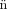
neth بنشر هذا العنصر على هيئة كثير حدود في قوى فئة Stiefel-Whitney الأولى. نعرّف مربعات Steenrod بأنها معاملات كثير الحدود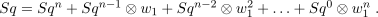
ويمكن النظر إلى القوى المختلفة لـ w1 على أنها تفهرس خلايا بنية CW مبنية من خريطة التبديل. وتربط المعاملات الهوموتوبيات المتدخلة في جداء الكأس بهذه الخلايا.تتمتع مربعات Steenrod بعدة خصائص مرغوبة [St62] [MT68] [MS74] [Ha02]. ولتجنب التكرار غير الضروري، لن نسجل هذه الخصائص هنا. فالصقل التفاضلي لهذه العمليات الكوهومولوجية سيحقق بعض الخصائص نفسها بعد تعميمها بالصورة المناسبة، ولكن مع فروق واضحة. لذلك نفضل أن تُستنتج هذه الخصائص الكلاسيكية من الخصائص المصقولة (انظر القسم 3.2).
نحتاج إلى مناقشة عمليات الكوهومولوجيا الصحيحة في الطريق إلى عمليات الكوهومولوجيا التفاضلية. وعلى وجه الخصوص، نود النظر في الرفوع الصحيحة لمربعات Steenrod، أي إننا نبحث عن مخطط
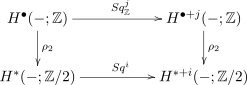
حيث ∙و ∗و i و j درجات ينبغي تحديدها. في الحالة التي يكون فيها i زوجياً يستحيل إيجاد مثل هذا الرفع. ويُستنتج ذلك مباشرة من متتالية بوكشتاين الدقيقة الطويلة الموافقة للمتتالية القصيرة الدقيقة ℤ
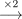
ℤ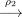
ℤ∕2. فلو وُجد مثل هذا الصقل الصحيح، لوجدت عملية صحيحة 𝜃 بحيث ρ2(𝜃) = Sq2i. لكن المتتالية الدقيقة الطويلة كانت ستقتضي β(Sq2i) = 0 (حيث β هو تشاكل Bockstein الموافق للمتتالية أعلاه). وهذا غير صحيح، إذ ρ2β(Sq2i) = Sq2i+1. في المقابل، تسمح لنا الصيغة أعلاه، في حالة مربعات Steenrod الفردية، بتعريف صقل صحيح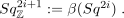
وستنتهي نتائجنا حول مربعات Steenrod التفاضلية إلى نمط مماثل. فالحالة الزوجية تعرض في القضية 9، بينما تعرض الحالة الفردية في النتيجة 11.2.2 المكدسات المرتبطة بالكوهومولوجيا التفاضلية
في هذا القسم نستعرض بعض المكدسات التي سنعمل معها، ونبرز بعض خصائصها المفيدة لنا. يمكن العثور على دراسة أكثر اكتمالاً في [FSSt12][SSS12] [FSS13][FSS15a].
نبدأ بتثبيت الإطار الذي سنستعمله في التعامل مع المكدسات.
تعريف 1. لتدل 𝒞art𝒮p على الفئة التي كائناتها مجموعات فرعية مفتوحة U ⊂ ℝn ديفيومورفية مع ℝn، لبعض n ∈ ℕ، ومورفزماتها خرائط ملساء f : U → V . وتحمل هذه الفئة بنية موقع Grothendieck، بطوبولوجيا تولدها الأغطية المفتوحة الجيدة، أي التي تكون تقاطعاتها المنتهية قابلة للتقلص.
نرمز إلى ∞-فئة الحزم المسبقة ∞على 𝒞art𝒮p بالرمز PSh∞(𝒞art𝒮p). ونرمز إلى ∞-فئة الحزم ∞ على 𝒞art𝒮p بالرمز Sh∞(𝒞art𝒮p).
ملاحظة 1. تقبل فئة الحزم ∞على 𝒞art𝒮p عرضاً بفئات نموذجية. وبصورة أدق، فإن أخذ العصب المتماسك هوموتوبياً للأجسام الليفية/المرافقة الليفية في البنية النموذجية البسيطية الإسقاطية (أو الحقنية) المحلية لـ Čech على الحزم المسبقة البسيطية على 𝒞art𝒮p يعطي عرضاً. وهذا يتيح لنا تمثيل الحزم ∞ بحزم مسبقة بسيطية ليفية إسقاطياً تحقق النزول الهوموتوبي.
تعريف 2. يسمى الكائن المحلي 𝒢∈Sh∞(𝒞art𝒮p) مكدساً سلساً (أو مكدساً عالياً). وفي العرض بالحزم المسبقة البسيطية يمكن تمثيل مثل هذا الكائن بدالة
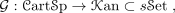
تحقق النزول الهوموتوبي بالنسبة إلى أغطية Čech (انظر [Du01][Lu09][Sc13] للمراجعة) .
دالة مهمة تتيح الانتقال بين المجموعات البسيطية ومعقدات السلاسل في الدرجات الموجبة هي دالة Dold-Kan
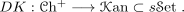
المكدس الذي سنستعمله أكثر من غيره في هذه الورقة هو مكدس المودولي للحزم n (أو الجربات) ذات الاتصال: BnU(1)∇. وينشأ هذا المكدس كسحب للمكدسات 1 إذا أهملنا الاتصال على هذه الحزم n حصلنا على مكدس المودولي غير المزود باتصال للجربات n، وهو BnU(1). وبصورة صريحة، نحصل على هذا المكدس بتطبيق دالة Dold-Kan على حزمة معقدات السلاسل C∞(−,U(1))[n]: وهي حزمة الدوال الملساء ذات القيم في U(1) في الدرجة n. أما المكدسات الأخرى المرتبطة بـ BnU(1)∇ في المخطط أعلاه فتعرف عبر تقابل Dold-Kan (2.2) كما يأتي (انظر [FSSt12] [FSS13] [FSS15a] [Sc13]):- يعرف المكدس Bn+1ℤ بأنه المكدس السلس الناتج من تطبيق دالة Dold-Kan على حزمة معقدات السلاسل ℤ[n]، حيث تكون حزمة الدوال المحلية الثابتة ذات القيم في ℤ في الدرجة n.
-
يُحصل على المكدس الممثل لمعقد de Rham المقتطع ♭dRBnU(1) بتطبيق Dold-Kan على حزمة معقدات de Rham المقتطعة
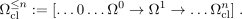
- يعرف مكدس الأشكال n المغلقة Ωcln بأنه المكدس الناتج من تطبيق Dold-Kan على حزمة الأشكال n المغلقة. تمت مناقشة ذلك أيضًا في [HS05] و [Bu12] (المشكلة 4.42).
يرتفع مخطط الكوهومولوجيا التفاضلية [SS08] إلى مخطط مكدسات [Bu12] [Sc13]
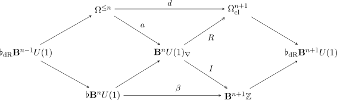
حيث تكون الأقطار متتاليات ألياف. إضافة إلى ذلك، تستحث الخرائط a و I و R تشاكلات في الكوهومولوجيا. وفي الواقع ترتبط المكدسات المحيطة بالمركز به ارتباطاً دالياً؛ فالدوال التي تنتج هذه المكدسات المحيطة جزء من إلحاق ∞يسمى إلحاقاً تماسكياً [BNV16] [Sc13].يبين [Sc13] أن الفئة ∞للمكدسات العليا السلسة Sh∞(𝒞art𝒮p) تقبل إلحاقاً رباعياً ∞في معنى الفئات العليا (Π ⊣disc ⊣Γ ⊣codisc)
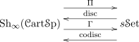
حيث يحفظ دال الغروبويد الأساسي Π حدود ∞المنتهية، وتكون دالتا التفريد والتفريد المشترك disc و codisc تامتين وفيتين. وفي سياقنا يقدم الإلحاق الرباعي بدوال Quillen، حيث نأخذ في الطرف الأيسر البنية النموذجية الإسقاطية المحلية لـ Čech.ومن نتائج ذلك أن s𝒮et تنغرس في Sh∞(𝒞art𝒮p) بطريقتين مختلفتين بوصفها ∞-فئة فرعية عاكسة. ومن العواكس يمكن إنتاج مونادين وكوموناد واحد كما يأتي:
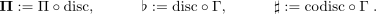
وتنتظم هذه المونادات في إلحاق ثلاثي (Π ⊣♭ ⊣♯) يسمى إلحاقاً تماسكياً. ونلاحظ أن الدوال المترافقة يمكن تقديمها بدوال مشتقة في بنية Quillen النموذجية المناسبة، حقنية محلية كانت أو إسقاطية محلية، على الحزم المسبقة البسيطية (انظر [Sc13] للتفاصيل).ملاحظة 2. كل موناد في الإلحاق التماسكي يختار جانباً مختلفاً من طبيعة المكدس السلس. ولعل هذه الطبيعة تتضح بأفضل صورة من سلوك المترافقات على المتشعبات الملساء، منظورةً كمكدسات. وبصورة أدق، إذا كان M متشعباً أملس، فإنه، مثلاً،
- (i)
- يأخذ الكوموناد ♭ (المسطح) مجموعة نقاط المتشعب الكامنة ثم يعيد إدراج هذه المجموعة في المكدسات ككائن متقطع. ومن ثم يغفل هذا الدال البنية الملساء للمتشعب ويعامله بدلاً من ذلك ككائن متقطع.
- (ii)
- أما الموناد Π فيأخذ، أساساً، العصب المفرد للمتشعب باستعمال مسارات ملساء وبسيطات ملساء عليا على المتشعب. لذلك فهو يحتفظ بهندسة المتشعب و“يعلم” أن نقاطه ينبغي أن تتصل بعضها ببعض اتصالاً أملس.
كما نوقش في [Sc13]، فإن المكدس العاري Bnℤ الممثل للكوهومولوجيا الصحيحة يكافئ ΠBnU(1)∇، في حين يكافئ المكدس المتقطع BU(1)δ مكدس المودولي للحزم المسطحة ♭BnU(1)∇. وبذلك يمكن إعادة كتابة مخطط المعين (2.2) باستعمال المونادين Π و ♭ فقط. وفي هذا السياق تنشأ “خريطة نزع الصقل” I بوصفها وحدة الموناد، أي تحويلاً طبيعياً
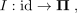
حيث id هو عامل الهوية. في الحالة المستقرة، يعود توصيف نظريات الكوهومولوجيا التفاضلية باستعمال هذه المونادات إلى [BNV16].نثبت الآن بعض الخصائص التي سنستعملها لاحقاً.
برهان. بما أن Γ و disc دالتان مترافقتان يميناً، فإنهما تتبادلان مع التحليق، لأن هذه العملية مثال على حد ∞. وبالتالي فهما تتبادلان أيضاً مع نزع التحليق، إذ يعرّف ذلك باستعمال التحليق. وينتج من التعريف (انظر (2.2)) أن ♭ يتبادل مع نزع التحليق. ثم لدينا
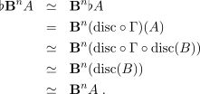
في الخطوة قبل الأخيرة استعملنا الحقيقة Γ ∘disc = id، لأن disc يعطى بتكديس الدالة الثابتة
UA، ثم يقيّم Γ ذلك عند نقطة U = ℝ0 فيعيد الكائن الأصلي A. □
تمثل مكدسات المودولي BnU(1)∇، عندما يتغير n، الكوهومولوجيا التفاضلية بمعنى أن الدالة
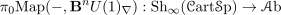
تسند إلى كل متشعب أملس X (مدرج في المكدسات عبر حزمة المخططات الملساء C∞(−,X)) زمرة الكوهومولوجيا التفاضلية n+1(X;ℤ). وهذا يتبع مباشرة تقريباً من عرض الكوهومولوجيا التفاضلية العادية بوصفها كوهومولوجيا Deligne، مع تقابل Dold-Kan [FSSt12] [Sc13]. ثم يستحث مورفزم نزع الصقل I : id →Π تحويلاً طبيعياً
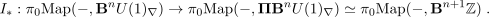
ويمكننا على نحو مكافئ كتابة هذه الخريطة كخريطة
وهي “خريطة التكامل” المألوفة التي تربط الكوهومولوجيا التفاضلية بنظرية الكوهومولوجيا الكامنة.
سنحتاج كثيراً إلى استعمال قابلية التمثيل في حساباتنا، بل نستطيع الانتقال من المكدسات إلى النظريات الكامنة بسلاسة نسبية. ولهذا نذكّر القارئ بالنظريات المختلفة التي تمثلها المكدسات في مخطط المعين المصقول (2.2) (انظر [FSS13] [FSS15a] [FSS15b] [Sc13] للتفاصيل). وفيما يأتي نستعمل الرمز Map(−,−) للـ hom البسيطي المشتق.
-
يمثل المكدس Bn+1ℤ الكوهومولوجيا الصحيحة العادية في الدرجة n+1. أي إن لدينا تشاكلاً طبيعياً
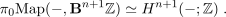
-
يمثل المكدس ♭BnU(1) الكوهومولوجيا ذات معاملات U(1):
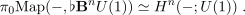
-
يمثل المكدس ♭dRBnU(1) كوهومولوجيا دي رام في الدرجة n + 1،
ومكافئاً لذلك، وبحسب مبرهنة دي رام، يمثل هذا المكدس أيضاً الكوهومولوجيا ذات المعاملات الحقيقية Hn+1(−;ℝ).
-
يمثل المكدس Ωcln حزمة الأشكال التفاضلية n المغلقة:
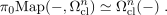
في بعض البراهين سنستعمل خصائص المكدسات المتقطعة عند حساب فئات الهوموتوبيا للخرائط. وبصورة أدق، لدينا إلحاق
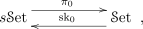
حيث يأخذ π0 المكونات المتصلة للمجموعة البسيطية. أما المترافق الأيمن sk0 فيدرج المجموعة ببساطة بوصفها مكدساً متقطعاً. ولتوضيح استعمال الإلحاق عملياً، لاحظ أن كلاً من المتشعب X وحزمة الأشكال n المغلقة Ωcln يمثل بكائن متقطع في فئة المكدسات. ثم لدينا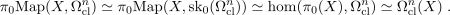
استعملنا هنا الإلحاق بين sk0 و π0، ثم مررنا إلى فئة الحزم، واستعملنا أخيراً لمّة Yoneda.
2.3 عمليات الكوهومولوجيا التفاضلية العامة
ننظر إلى عمليات الكوهومولوجيا التفاضلية من وجهة نظر عامة، ثم نخصصها في الأقسام اللاحقة. وسندرس هذه العمليات في سياق مقاربة المكدسات للكوهومولوجيا التفاضلية.
كما أشرنا في المقدمة، سنحتاج إلى دراسة مورفزمات المكدسات والهدف من هذا القسم هو بيان الخصائص العامة لهذه الخرائط وتقديم مبرهنة توصيف تصف الشكل العام لجميع هذه العمليات. ولإثبات المبرهنة نحتاج إلى فهم كيفية صقل عمليات الكوهومولوجيا التفاضلية للعمليات الكلاسيكية. وستكون المترافقات التماسكية (2.2) نافعة جداً في هذه المناقشة. فجوهر الأمر أن هذه الدوال تنتقي جوانب مختلفة من مكدس المودولي BnU(1)∇. ومن ثم، عند دراسة الخرائط (2.3)، نستطيع استعمال هذه الدوال لعزل أجزاء مختلفة من مكدس المصدر أو الهدف بحسب الموضع. ثم نستعمل خصائص هذه الدوال للوصول إلى تشاكلات بين مجموعات hom في فئة الهوموتوبيا، وهي تشاكلات كان إثباتها سيتطلب عملاً كبيراً بغير ذلك.
فيما يأتي سنواصل الرمز إلى زمرة الكوهومولوجيا التفاضلية لمتشعب قابل للتفاضل X في الدرجة n بـ n(X;ℤ)، ونطابقها مع الدالة التغايرية
بعد قصرها على الفئة الفرعية للمتشعبات الملساء.
تعريف 4. عملية كوهومولوجية تفاضلية هي تحويل طبيعي بين الدوال
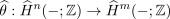
أو، على نحو مكافئ، فئة هوموتوبيا لخرائط بين المكدسات
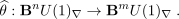
في هذه المرحلة نرى بالفعل إحدى مزايا مقاربة المكدسات لعمليات الكوهومولوجيا التفاضلية. أي أنه يمكننا وصف هذه العمليات كعناصر في المجموعة π0Map(BnU(1)∇,BmU(1)∇)، تماماً كما تكون عمليات الكوهومولوجيا الصحيحة عناصر في Hm(K(ℤ,n);ℤ) ≃π0Map(K(ℤ,n),K(ℤ,m)). وهذا يسمح لنا بالإنشاء على المستوى الشامل، وهو أمر غير ممكن دون استعمال المكدسات.
بما أن المكدس BnU(1)∇ ينشأ كسحب (2.2)، فإن الخاصية الشاملة للسحوبات تضمن أن خريطة من النوع (2.3) تستحثها مخطط تبادلي حتى الهوموتوبيا يضم عمليات τ على الأشكال التفاضلية المغلقة، و α على كوهومولوجيا دي رام، و 𝜃 على الكوهومولوجيا المفردة
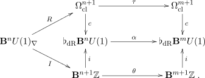
ومن ثم نرى أن ثلاثية (𝜃,α,τ) تجعل المخطط أعلاه تبادلياً حتى اختيار مورفزم 2، وتستحث مباشرة عملية كوهومولوجية تفاضلية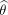
. وتبرز هذه الرؤية أن عمليات الكوهومولوجيا التفاضلية ليست إلا تركيباً متوافقاً بين عمليات على الأشكال التفاضلية وعمليات على الكوهومولوجيا الصحيحة. كما يلزم أن تكون هذه العمليات متجانسة هوموتوبياً في مكدس de Rham ♭dRBmU(1).إذا استحثت عملية كوهومولوجية تفاضلية من مثل هذه الثلاثية، فإننا نقول إن تصقل عملية الكوهومولوجيا الصحيحة 𝜃 والعملية τ على الأشكال التفاضلية. ومن حيث المبدأ المجرد العام، قد لا يصح عكس العبارة السابقة. أي إن كل مورفزم كما في التعريف 4 ليس بالضرورة مستحثاً من مثل هذه الثلاثية. غير أننا سنرى الآن أن ذلك صحيح فعلاً، بسبب الطبيعة الخاصة للسحب المعين الذي يتضمن BnU(1)∇، نرى الآن أن هذا هو الحال بالفعل.
قضية 5. كل عملية كوهومولوجية تفاضلية تصقل عملية صحيحة
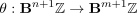
وعملية على الأشكال
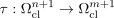
وتنتظم هذه العمليات في ثلاثية تبادلية حتى الهوموتوبيا (𝜃,α,τ) كما في (2.3). وعلاوة على ذلك، فعلى مستوى فئات الهوموتوبيا لدينا
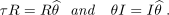
ومخططياً، لدينا تبادلية حتى الهوموتوبيا

برهان. لتكن عملية كوهومولوجية تفاضلية. عندئذ I: BnU(1)∇ →Bm+1ℤ. وبما أن ℤ متقطع، فلدينا Bn+1ℤ ≃♭Bn+1ℤ. هذه الحقيقة، مع الإلحاق التماسكي، تعطي التكافؤ
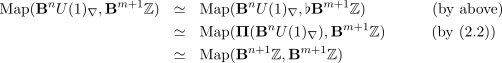
وبما أن التكافؤ المركب بين السطرين الأول والثالث مستحث من التركيب المسبق بـ I (راجع المناقشة حول المعادلة (2.2))، فنحصل على عملية 𝜃 : Bn+1ℤ →Bm+1ℤ بحيث 𝜃I = I على مستوى فئات الهوموتوبيا.
لإثبات أن تصقل عملية على الأشكال، نلاحظ أن R: BnU(1)∇→Ωclm+1 ، وبما أن Ωclm+1 كائن متقطع، فإن استعمال الإلحاق (2.2) يعطي التشاكل استعملنا هنا التشاكلات
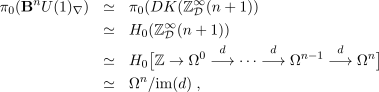
ويستحث التفاضل الخارجي تشاكلاً بعد التحزيم (بواسطة لمّة Poincaré)
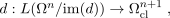
حيث L هو دال التحزيم. لذلك يكون الطرف الأيمن من المعادلة (2.3) مشاكلاً لـ hom(Ωcln+1,Ωclm+1). وهذا التشاكل هو بالضبط التركيب المسبق مع الانحناء (المعادلة (2.3))، ومن ثم توجد عملية τ على الأشكال بحيث τR = R على مستوى فئات الهوموتوبيا. وتنتج التبادلية حتى الهوموتوبيا من تبادلية مخطط السحب (2.3) حتى الهوموتوبيا. وتعطي التبادلية حتى الهوموتوبيا للمخطط (5) هوموتوبيا cR→cI ، والذي يمكننا التعرف عليه بـ α. ولا يضيف تفصيل هذا التعرف فائدة تذكر، لذلك نترك هذه التفاصيل للقارئ المهتم. □ملاحظة 3. إذا فكرنا في عناصر n(X;ℤ) كحزم خطية عليا مزودة باتصال، فإن القضية السابقة توضح كيف يمكن تفسير العملية الكوهومولوجية التفاضلية بوصفها عملية على الحزم. كما أن انحناء الحزمة الناتجة وفئتها الصحيحة الكامنة يُحصل عليهما عبر عملية ما في الكوهومولوجيا المفردة وعملية على الأشكال.
في هذه المرحلة قد يرغب القارئ في رؤية أمثلة على عمليات الكوهومولوجيا التفاضلية. ولدينا بالفعل المثالان التاليان، وهما، كما سنرى صراحة في اللمّة 7، في الأساس الأمثلة الوحيدة التي تعطي فئات ذات انحناء غير صفري.
مثال 1 (فئة Dixmier-Douady). فئة الهوموتوبيا لمورفزم الهوية
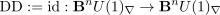
هي عملية كوهومولوجية تفاضلية تسمى فئة Dixmier-Douady (العليا)، لأنها تقابل طوبولوجياً الفئة الكوهومولوجية الأساسية ιn في Hn(K(G,n);G). وتُبرز هذه الفئات العليا في [FSS13] [FSS15a]. ومن السهل أن نرى أن هذه الفئة تصقل العمليات
حيث يكون كل من μn+1 و ιn+1 خريطة الهوية، منظورتين كفئتين أساسيتين لـ المكدسات المقابلة. ولعل الأخيرة مألوفة من قابلية تمثيل الكوهومولوجيا المفردة بفضاءات Eilenberg-MacLane. أما الأولى، فلاحظ أننا في المكدسات نستطيع النظر إلى مكدس الأشكال n المغلقة بوصفه ممثلاً لنظرية كوهومولوجية أيضاً، ولكن بمعنى أعم.
مثال 2 (عملية القوة). ليكن m عدداً صحيحاً موجباً. سننظر في جداء كأس Deligne-Beilinson ∪DB على المكدسات (انظر [FSS13] [FSS15a] [GS16a]). عندئذ تعطي القوة ذات m أضعاف مورفزماً بين المكدسات
كما وصف في [FSS13]. وفئة الهوموتوبيا لهذه الخريطة هي، بالتعريف، عملية كوهومولوجية تفاضلية. ويصقل مورفزم جداء الكأس جداء الكأس المفرد والجداء الإسفيني للأشكال [FSS13][GS16a]. وبناء على ذلك نرى مباشرة أن هذه العملية تصقل قوة الجداء الإسفيني وقوة جداء الكأس، على الترتيب، منظورتين كقوى للفئات الأساسية التي صادفناها في المثال 1. وبصورة صريحة،
سنخصص ما تبقى من هذا القسم لإثبات مبرهنة التوصيف الرئيسية الآتية لعمليات الكوهومولوجيا التفاضلية.
مبرهنة 6 (نظرية التوصيف). لتكن عملية كوهومولوجية تفاضلية. عندئذ يتحقق واحد، وواحد فقط، مما يأتي:
- 1.
- = nDD، لبعض n ∈ℤ.
- 2.
- = nDDm، لبعض n ∈ℤ.
- 3.
- تتحلل على الصورة
حيث j : ♭BmU(1)BmU(1)∇ هو التضمين المسطح، و ϕ : Bn+1ℤ →♭BmU(1) عملية من الكوهومولوجيا المفردة إلى الكوهومولوجيا ذات معاملات U(1)، و I هو المورفزم القانوني I : BnU(1)∇→Bn+1ℤ.
ملاحظة 4. (i) هذه المبرهنة مناظرة لكون كوهومولوجيا فضاءات إيلينبرغ-ماكلين الصحيحة منتهية أو غير منتهية تبعاً للدرجة.
(ii) لاحظ أن المورفزمات j و ϕ و I يمكن وصفها بطريقة أكثر كلاسيكية على منوال العرض في المقدمة، بل تعميماً له. فإن j عملية من معاملات U(1) ≃ℝ∕ℤ إلى الكوهومولوجيا التفاضلية، التي يمكن النظر إليها بمعنى دقيق “كـ” معقد Deligne ℤ𝒟∞، و ϕ خريطة من معاملات ℤ إلى معاملات U(1)، و I خريطة من الكوهومولوجيا التفاضلية (بوصفها ℤ𝒟∞) إلى معاملات ℤ.
لإثبات المبرهنة سنحتاج إلى فهم العمليات النسبية والصحيحة، إلى جانب العمليات على الأشكال. نبدأ بتذكير موجز بالعمليات الصحيحة والنسبية.
نستذكر أن العمليات الوحيدة التي تظهر نسبياً هي الهوية وعمليات القوة. فحلقة الكوهومولوجيا النسبية لفضاء إيلينبرغ-ماكلين النسبي تتولد بمولد واحد (انظر مثلاً [GM13]، اللمّة 8.5)، وهي جبر كثيرات حدود على ℚ أو جبر خارجي على ℚ، تبعاً للتكافؤ، حيث ιq هي الفئة الأساسية ذات الدرجة q.
أما حالة الكوهومولوجيا المفردة فهي بالطبع أكثر تعقيداً. غير أن الاعتبارات النسبية أعلاه تجعل الوضع أيسر بكثير. فهي تعني أن Hn+q(K(ℤ,n);ℤ) لا بد أن تكون منتهية عندما n q. وإلا لكان ترشيدها غير صفري في هذه الدرجات، وليس الأمر كذلك.
ملاحظة 5. وتلخيصاً لذلك، مع خصائص أخرى لهذه الزمر، لدينا (انظر مثلاً [Ca54] [Po66] [FFG86])
- 1.
- Hn+q(K(ℤ,n);ℤ) منتهية ومستقلة عن n عندما 0 < q < n.
- 2.
- عندما n q تكون زمرة دورية لا نهائية تولدها قوى الفئة الأساسية.
- 3.
- الجزء p-الأولي من Hn+q(K(ℤ,n);ℤ) يساوي صفراً عندما 0 < q < 2p −1.
- 4.
- إذا كان n < 2p −1، فإن الجزء p-الأولي من Hn+2p−1(K(ℤ,n);ℤ) دوري من الرتبة p، وتولده العملية (βpPp1)(u)، حيث u هي الفئة الأساسية، و Pp1 هي العملية 1 الأولى P عند العدد الأولي p، و βp هو تشاكل Bockstein لمتتالية بترديد p.
ننتقل الآن إلى العمليات الممكنة على الأشكال، وهي منسجمة مع العمليات في الكوهومولوجيا النسبية.
لمّة 7. ليدل μn : Ωcln → Ωcln على مورفزم الهوية على الأشكال، منظوراً إليه كفئة أساسية لحزمة الأشكال n المغلقة. وتشكل المجموعة π0Map(Ωcln,Ωcl∗) جبراً متدرجاً، ولدينا
حيث تشير النجمة ∗في الطرف الأيسر إلى تدرج تحدده القوى في الطرف الأيمن.
برهان. ليكن f : Ωn →Ω∗ تحويلاً طبيعياً للحزم. لقد بُين في [NS15] أن أي إسناد للأشكال
التفاضلية ωf(ω) يكون طبيعياً بالنسبة إلى السحب يُعطى بكثير حدود في ω ومشتقته dω. لذلك إذا
قصرنا f على حزمة الأشكال المغلقة، رأينا أن f يجب أن يسند إلى كل مقطع ω ∈Ωcln كثير حدود في ω.
والادعاء ليس إلا إعادة صياغة لهذه الحقيقة. □
سنحتاج إلى اللمّة الآتية في برهان المبرهنة الرئيسية، المبرهنة 6. وتبين اللمّة، في جوهرها، أن عمليات الكوهومولوجيا التفاضلية الوحيدة التي تكشفها كوهومولوجيا دي رام هي العمليات النسبية. ويحتكم البرهان مرة أخرى إلى الإلحاق التماسكي، الذي يستخرج المعلومة الملائمة من مكدس المودولي الكامل للحزم n.
برهان. بحسب مبرهنة دي رام، لدينا ♭dRBmU(1) ≃Bm+1ℝ. وبما أن ℝ متقطع (كمكدس)، فلدينا ♭Bm+1ℝ ≃Bm+1ℝ. وبالتماسك نحصل على التكافؤات
وينتج الادعاء من خصائص فضاءات إيلينبرغ-ماكلين، وبالتحديد من البنية في (2.3) ومن الجزء الأول
من الملاحظة 5. □
نحن الآن مستعدون لإثبات المبرهنة 6. وسنرى أن الحالة الأولى مباشرة بفضل الاحتكام إلى نظرية دي رام، في حين تصبح الحالة الثانية دقيقة جداً بسبب الالتواء.
برهان. لتكن عملية كوهومولوجية تفاضلية. وبحسب اللمّة 7، لدينا احتمالان للعملية المقابلة τ على الأشكال.
(i) τ = λμnq, q ≥0, λ ∈ℝ
لننظر أولاً في الحالة λ = 1. عندئذ تقبل τ صقلاً واحداً على الأقل، إذ إن DDq تصقل هذه العملية. ولإثبات أن هذا هو الاحتمال الوحيد، لتكن عملية أخرى تصقل τ. وبما أن n+ nq مضاعف لـ n، فإن Hn+nq(K(ℤ,n);ℤ) زمرة دورية لا نهائية يولدها أس جداء الكأس ιnq. وتفرض تبادلية (2.3) حتى الهوموتوبيا أن تكون عملية الكوهومولوجيا المفردة الكامنة هي 𝜃 = ιnq، ومن ثم تكون صقلاً لكل من قوة الجداء الإسفيني وجدء الكأس. ومن المعروف (انظر مثلاً [Bu12]) أن جداء الكأس لـ Deligne-Beilinson هو الصقل الوحيد لهذه العمليات حتى الهوموتوبيا، وأن = DDq.
أما من أجل λ عام، فنستذكر أن خريطة الانحناء شاملة على الأشكال المغلقة ذات الفترات الصحيحة. لذلك، عندما λ∉ℤ، لا تقع العملية λμnqR في صورة R، ومن ثم لا تقبل τ صقلاً تفاضلياً. أما عندما λ ∈ℤ، فإن λDDq تعرّف صقلاً، وهو أيضاً وحيد حتى الهوموتوبيا.
(ii) τ = 0
لتكن صقلاً لـ τ = 0. عندئذ R≃τR ≃0. وبما أن ♭BmU(1) هي ليف R، فلا بد أن تتحلل عبر التضمين المسطح j : ♭BmU(1)BmU(1)∇. ولنسمّ خريطة التحليل ϕ′. ومن تبادلية المخطط (2.3) حتى الهوموتوبيا، وباستعمال القضية 5، لدينا ذلك أيضًا
ومن ثم فإن صورة I يجب أن تقتلها i𝜃. لكن التبادلية حتى الهوموتوبيا تقتضي عندئذ أن تتحلل i𝜃 عبر تضمين النقطة ∗→♭dRBmU(1). فنحصل على مخطط تبادلي حتى الهوموتوبيا
وبالنظر إلى متتالية الألياف
نرى أن الخاصية الشاملة تعطي خريطة ϕ : BnU(1) →♭BmU(1) بحيث 𝜃 ≃βϕ، حيث β هي خريطة Bockstein في معين المكدسات (2.2). والآن، على مستوى فئات الهوموتوبيا، لدينا
وهذا يعني أن ϕI −ϕ′ تقع في نواة β. وبالدقة في معين المكدسات (2.2)، ينتج أن ϕI −ϕ′ تقع في صورة إذا كان m≠kn، لبعض k > 0، فإن الزمرة في الطرف الأيسر تساوي صفراً باللمّة 8. ولذلك ϕI = ϕ′ و
أما إذا كان m = kn، فإن الزمرة الواقعة يسار (2.3) مشاكلة لـ ℝ، أيضاً باللمّة 8. وفي هذه الحالة نستذكر من القضية 3 أن لدينا تكافؤاً
ثم بالتآلف التماسكي لدينا
ومرة أخرى، يوفر هذا التشاكل التركيب المسبق مع I : id →Π (المعادلة (2.2)). والآن لتكن φ بحيث ϕI −ϕ′= exp(φ). وبالتشاكل أعلاه (2.1)، ينتج أن هناك
بحيث exp(φ) = ϕ′′I. ومن ثم ϕI −ϕ′= exp(φ) = ϕ′′I، وبالتالي ϕ′= (ϕ−ϕ′′)I، منذ لأن I عملية خطية.
وبتطبيق j على المعادلة الأخيرة نحصل على النتيجة. □
3 عمليات ستينرود التفاضلية
نود الآن تطبيق مناقشة القسم السابق وتخصيصها لوصف عمليات كوهومولوجية تفاضلية تصقل مربعات Steenrod الكلاسيكية (انظر القسم 2.1). أي أننا نسعى إلى عمليات الكوهومولوجيا التفاضلية i بحيث هنا، يشير ρ2 : ℤ →ℤ∕2 إلى مورفزم الاختزال بترديد 2. وبإعادة صياغة هذا بشكل تخطيطي، فإننا نهدف إلى رسم تخطيطي تبادلي في القسم السابق رأينا أن كل عملية كوهومولوجية تفاضلية تصقل عملية مفردة. لذلك نستطيع ملء السهم الرأسي الأوسط وطلب أن يكون المخطط كله تبادلياً حتى الهوموتوبيا.
ومع ذلك، كما رأينا في المقدمة، فإن طلب تبادلية المربع الأيمن حتى الهوموتوبيا قوي أكثر مما ينبغي عموماً. فليست كل عملية ℤ∕2 تقبل صقلاً صحيحاً. فعلى سبيل المثال، العمليات
لا يمكن أن يكون لها صقل صحيح. وإلا لكانت العملية في صورة خريطة الاختزال بترديد 2، وبالدقة لكان تشاكل Bockstein β(Sq2m) (الذي يربط المعاملات الصحيحة بالمعاملات بترديد 2) منعدماً. لكن الأمر ليس كذلك، إذ إن علاقات Adem تعطي
لذلك لا معنى لصقل مربعات Steenrod الزوجية.
وبعبارة أخرى، عند صقل عمليات بترديد 2 (أو بترديد p عموماً)، يحتاج المرء أولاً إلى صقل صحيح. فإذا وجد مثل هذا الرفع الصحيح أمكن عندئذ السؤال عن صقل تفاضلي.
وبالنظر إلى مبرهنة التوصيف، المبرهنة 6، المثبتة في القسم السابق، يمكننا تحديد ماهية هذه الفئات في حالة مربعات Steenrod الفردية بسهولة نسبية.
لمّة 10. تتحلل عمليات Steenrod الصحيحة الفردية Sqℤ2k+1 : Hn(−;ℤ) → Hn+2k+1(−;ℤ) تحللاً وحيداً على الصورة
حيث تستحث Γ2 من تمثيل ℤ∕2U(1) بوصفها الجذور التربيعية للوحدة، و هو Bockstein الموافق للمتتالية الأسية ℤ →ℝ →U(1).
برهان. نستذكر أن Sqℤ2k+1 عُرفت بأنها العملية βSq2kρ2، حيث β هو Bockstein الموافق للمتتالية
والآن لننظر في مورفزم المتتاليات القصيرة الدقيقة
يستحث هذا المورفزم مورفزماً لمتتاليات تليف طويلة تتضمن تشاكلات Bockstein
وتعطي تبادلية المربع الأيمن حتى الهوموتوبيا التحلل المطلوب. أما الوحيدة فتنتج من تعريف
Sqℤ2k+1، مع حقيقة أن كل عملية مستقرة ϕ : Bn−1ℤ∕2 →Bn−1U(1) مستحثة من تمثيل Γ2 : ℤ∕2 →U(1)
(ولا يوجد منه إلا 1). □
وكنتيجة للقضية 10 ولمبرهنة التوصيف، المبرهنة 6، لدينا ما يلي.
نتيجة 11. لتكن 2k+1 عملية كوهومولوجية تصقل مربع Steenrod الصحيح الفردي Sqℤ2k+1. ثم لدينا
ومن ثم نستطيع تعريف الصقل بأنه 2k+1 := 2k+1. ومخططياً لدينا
برهان. بما أن تصقل Sqℤ2k+1، وهي ذات قيم في الالتواء، فلدينا i(Sqℤ2k+1) = 0. وتستلزم تبادلية المخطط (2.3) حتى الهوموتوبيا أن تكون العملية المقابلة على الأشكال τ = 0. وبحسب المبرهنة 6، لا بد أن يكون لدينا
لبعض العمليات
وبما أن Sqℤ2k+1I = I= βϕI، فإن القضية 10 تقتضي أن ϕ يجب أن يكون Γ2Sq2kρ2. □
3.1 العلاقة مع جداء الكأس لـ Deligne-Beilinson
أثبتنا في القسم السابق أن الصقل التفاضلي الوحيد لمربعات Steenrod الفردية يعطى بالعملية 2k+1 := jΓ2Sq2kρ2I. ومن ثم، فمن جهة الصقل، يكون عملنا منجزاً. غير أننا نعلم كلاسيكياً أن مربعات Steenrod مرتبطة بتبادلية جداء الكأس حتى الهوموتوبيا. لذلك يمكن أن نسأل هل ترتبط مربعات Steenrod التفاضلية بتبادلية جداء الكأس لـ Deligne-Beilinson حتى الهوموتوبيا أم لا. ويمكن النظر إلى هذا القسم بوصفه صقلاً لوجهة النظر الكلاسيكية الثانية في مربعات Steenrod المعروضة في القسم 2.1.
والواقع أنه معروف سلفاً في [Go08] أنه إذا كانت فئة كوهومولوجية تفاضلية من الدرجة 2n + 1، فإن مربع Deligne-Beilinson 2 يرتبط بصورة مربع Steenrod Sqn−1 في الكوهومولوجيا التفاضلية عبر الخريطة jΓ2، المقدمة في القسم السابق. وفي نهاية القسم نعمم نتيجة Gomi [Go08].
ليكن X متشعباً. وكما هو موضح في [FSS13]، لدينا مورفزم جداء كأس في الكوهومولوجيا التفاضلية
وكما في الحالة الكلاسيكية، فإن جداء الكأس لـ Deligne-Beilinson ليس تبادلياً بالتدرج بصرامة، ولكنه تبادلي بالتدرج حتى الهوموتوبيا. أي إن لدينا مخططاً تبادلياً حتى الهوموتوبيا في المكدسات
إذا اخترنا هوموتوبيات وهوموتوبيات تماسك عليا تملأ المخطط، أمكن التعبير عن ذلك على نحو مكافئ بالقول إن B2n+1U(1)∇ كوكُوْن (∞,1) فوق المخطط المعطى بفعل ℤ∕2 (نسميه ψ) على X ×X عبر خريطة التبديل أعلاه. وإذا أخذنا الكوليمت على هذا الفعل ℤ∕2 فإن خاصية الكوليمت الشاملة تضمن وجود خريطة، وحيدة حتى الهوموتوبيا، من هذا الكوليمت إلى B2n+1U(1)∇. أي إن لدينا ما يلي.
ملاحظة 6. يعمل الكوليمت هنا على استخراج الهوموتوبيات المتدخلة في فعل ℤ∕2. وتلحق الخريطة الهوموتوبيات المتدخلة في جداء الكأس بهذه الهوموتوبيات.
على الرغم من وجود طرق متعددة محتملة لحساب هذا الكوليمت، فسنعتمد البنية التماسكية على المكدسات الملساء لإجراء الحساب.
قضية 13. ليكن Y مكدساً مزوداً بفعل ℤ∕2، أي دالة ψ : ℤ∕2 → Sh∞(𝒞art𝒮p) ترسل الكائن الوحيد ∗∈ℤ∕2 إلى المكدس Y . ويحسب الكوليمت على هذه الدالة كما يأتي:
حيث Eℤ∕2 = disc(S∞) هي الحزمة الرئيسية الشاملة المتقطعة لـ ℤ∕2 فوق المكدس المتقطع Bℤ∕2 = disc(ℝP∞).
برهان. بما أن فئة المكدسات المسبقة [𝒞art𝒮p,s𝒮et] توافقية وبسيطية، فإن الكوليمت الهوموتوبي في المكدسات المسبقة يمثله الكوليمت الهوموتوبي المحلي
هنا يشير 𝒩 إلى العصب، ويشير ⊙إلى جداء موتر مكدس مع مجموعة بسيطية. ولحساب الطرف الأيمن، نلاحظ أن موترة مكدس مسبق Y مع مجموعة بسيطية X تعطى بأخذ الجداء مع المكدس الثابت
ثم يحسب التغاير المشترك (coend) على الصورة

وقد حسبنا الكوليمت الهوموتوبي في المكدسات المسبقة. وبما أن دال التحزيم مترافق
يسار ∞، فإنه يحفظ الكوليمتات الهوموتوبية، ولا يبقى إلا حساب تحزيم المكدس المسبق
const
(Eℤ∕2) ×ψY . وبما أننا افترضنا أن Y مكدس، فهذا هو disc(Eℤ∕2) ×ψY كما ادعينا.
□
بالعودة إلى مناقشتنا، يمكننا الآن فك الهوموتوبيات الموجودة في فعل ℤ∕2.
قضية 15. خريطة جداء الكأس المكدسية X →X ×X →B2n+1U(1)∇ يمكن تمديدها إلى خريطة تجعل المخطط
تبادلياً حتى الهوموتوبيا. وعلاوة على ذلك، بعد اختيار هوموتوبيات وهوموتوبيات عليا تملأ المخطط، تتحدد تحديداً وحيداً حتى الهوموتوبيا. وهنا تكون الخريطتان الرأسيّتان مقطعين قانونيين للإسقاط pX : X ×B∕ℤ∕2 →X، أما Q(Δ) فلم تُحدد بعد.
برهان. نزوّد X بالفعل التافه ℤ∕2، ونزوّد X ×X بالفعل المعطى بتبديل العاملين. عندئذ فإن القطر
يعرف تحويلاً طبيعياً بين أفعال ℤ∕2، ومن ثم يستحث خريطة Q(Δ) على الكوليمتات الهوموتوبية المقابلة. علاوة على ذلك، وبسبب تبادلية جداء الكأس حتى الهوموتوبيا، فإن الخريطة
تتبادل، حتى الهوموتوبيا، مع فعل ℤ∕2. وبعد اختيار الهوموتوبيات والهوموتوبيات العليا، تنتج
الخاصية الشاملة لكوليمتات (∞,1) خريطة ، محددة تحديداً وحيداً حتى الهوموتوبيا، تجعل المخطط
تبادلياً. □
لاستخراج مربعات Steenrod من هذا المخطط سنحتاج إلى اختيار هوموتوبيات تملأه ودراسة الخريطة المركبة Q(Δ). وهذا مناظر للحالة الكلاسيكية، حيث يبنى مثل هذا المخطط ثم تستعمل صيغة Künneth لحساب كوهومولوجيا الدرجة 2n لـ X ×ℝP∞. ثم تعرّف المعاملات بأنها مربعات Steenrod.
ملاحظة 7. ومن اللافت أن طريقتنا تبدو أبسط مفاهيمياً بكثير من البناء الكلاسيكي. غير أننا نؤكد أن البناء الصريح لهوموتوبيات التماسك الأعلى سيكون معقداً بقدر تعقيده في الحالة الكلاسيكية. ولحسن الحظ سنتمكن من الاستفادة من البناء الكلاسيكي في اختيار الهوموتوبيات.
كما أشرنا، سنحتاج إلى استعمال مبرهنة من نوع Künneth للكوهومولوجيا التفاضلية. وعلى الرغم من أن مثل هذه المبرهنة يُحتمل أن تتبع من مبرهنة أعم للكوهومولوجيا الفائقة للحزم، فإن هذه الحالة الخاصة لا تتطلب تلك الآلة، ويمكننا إثبات الادعاء مباشرة 2 .
قضية 16. (تحليل Künneth للكوهومولوجيا التفاضلية) ليكن X متشعباً أملس، ولتكن Y = disc(Y ′)، حيث Y ′مجموعة بسيطية من نوع منته، أي لها عدد منته من البسيطات في كل درجة بسيطية. عندئذ لدينا متتالية قصيرة دقيقة طبيعية
علاوة على ذلك، ينقسم التسلسل (ولكن ليس بالطبيعية).
برهان. لتكن {Ui}غطاءً مفتوحاً جيداً لـ X، ولتكن C({Ui}) عصب Čech للغطاء. وبما أن Y = disc(Y ′) لبعض مجموعة بسيطية Y ′، فهو كائن مرافق ليفياً في البنية النموذجية الإسقاطية على الحزم المسبقة البسيطية. وبما أن هذه الفئة النموذجية ديكارتية، فإن الجداء C({Ui)}) ×Y حل إسقاطي لـ X ×Y .
المعقد الكلي للمعقد المزدوج Čech-Deligne لـ X ×Y هو، بالتعريف، hom في معقدات السلاسل غير المحدودة
حيث C∙: PSh∞(𝒞art𝒮p) →PSh(𝒞art𝒮p;s𝒜b) →PSh∞(𝒞art𝒮p;𝒞h+) هو، بعد المد إلى الحزم المسبقة، تركيب الدالة الحرة ودالة معقد Moore. وتعطي خريطة Eilenberg-Zilber تكافؤ هوموتوبيا سلاسل
وبأخذ hom في معقدات السلاسل إلى معقد Deligne ينتج أن لدينا التكافؤ
وبما أن Y ′منتهية التولد في كل درجة بسيطية، فإن فرضية الانتهاء المناسبة متحققة، والخريطة القانونية
شبه تشاكل.
اكتب
لمعقد السلاسل المشتركة لـ Čech الخاص بـ Y . وبالنسبة إلى معقد Čech-Deligne الكلي، لدينا
ثم
| Hi ⊗Hj = ⊕ i+j=0Hn−i−1(X;ℤ 𝒟∞(n + 1)) ⊗H−j(Y ;ℤ) = n(X;ℤ) ⊕⊕ i=1nHn−i−1(X;U(1)) ⊗Hi(Y ;ℤ) |
و
| = ⊕ i+j=−1Tor = Tor(n(X;ℤ),H1(Y ;ℤ)) ⊕⊕ i=1nTor . |
والآن تتبع النتيجة من صيغة Künneth المعتادة. □
نكيّف الآن تحليل Künneth العام مع الحالة المرتبطة مباشرة بمربعات Steenrod.
برهان. بتطبيق القضية 16 مع Y = Bℤ∕2، نحصل على
| (X ×Bℤ∕2;ℤ)2n(X;ℤ) ⊕⊕ i=1nH2n−i−1(X;U(1)) ⊗Hi(Bℤ∕2;ℤ)⊕ ⊕Tor(2n(X;ℤ),H1(Bℤ∕2;ℤ)) ⊕⊕ i=12nTor . |
يبقى تحديد هذه الزمر. نلاحظ أولاً أن لدينا التشاكل لكل i. ولرؤية ذلك، لننظر في المتتالية القصيرة الدقيقة ℤℤ →ℤ∕2. والضرب التوتري مع Hi(X;U(1)) يؤدي إلى المتتالية
لكن بما أن المعاملات هي U(1)، فإن الخريطة ×2 شاملة، وتؤكد مبرهنة التشاكل الأولى الادعاء (3.1) .
نستذكر الآن زمر الكوهومولوجيا الصحيحة لفضاء التصنيف K(ℤ2,1) = ℝP∞
وبدمج ذلك مع المعادلة (3.1) يعطي
ومن ثم تُحسب زمر Tor بسهولة
| (2n(X;ℤ),H1(Bℤ∕2;ℤ)) ⊕⊕ i=12nTor ≃⊕ 1≤i≤2n, oddTor ≃⊕ j<2n evenT2j . |
□
في الواقع يمكننا أن نكون أدق قليلاً بشأن الصورة الفعلية لزمر الالتواء T2j. ولهذا الغرض نبدأ باستذكار الآتي.
بيان اللمّة كلاسيكي ويمكن إثباته بطرق متعددة. فعلى سبيل المثال يمكن النظر إلى ℝP∞ بوصفه Grassmannian G2m+1(ℝ∞) مع m = 0، حيث إن متتالية Bockstein الدقيقة
تقتضي أن الكوهومولوجيا الصحيحة H∗(G2m+1(ℝ∞);ℤ) تنشطر جمعياً كمجموع مباشر لكثير حدود ℤ[p1,,pm] وصورة β (انظر [MS74]، المسألة 15-C). وعندما m = 0 يعطي ذلك أن الكوهومولوجيا الصحيحة لـ ℝP∞ هي صورة β. ويمكن استنتاج ذلك أيضاً عبر معقدات السلاسل (انظر [Ha02]، ص. 222). وطريقة ثالثة هي النظر إلى متتالية Gysin للكوهومولوجيا الصحيحة الموافقة لحزمة الدائرة S1 →S∞ℝP∞, أي
حيث π∗ هو السحب، و π∗ هو الدفع إلى الأمام، و e هي فئة Euler لحزمة الدائرة. وهذا الأخير يعطي تشاكلاً بين جميع زمر الكوهومولوجيا في الدرجات الزوجية لـ ℝP∞. ثم إن فئة Euler e، لكونها ذات 2-التواء، تعطي النتيجة المطلوبة.
بالعودة إلى زمرة الالتواء الجزئية 2 T2j، ومن أجل j زوجي، يعطى اقتران الالتواء صراحة على النحو الآتي:
والآن فإن المتتالية
حل إسقاطي. ولذلك يعطى اقتران الالتواء بوصفه نواة الخريطة
وتمتد هذه النواة بعناصر من الصورة y ⊗xj، حيث y عنصر ذو 2-التواء في H2n−j(X;U(1)).
وأخيراً نعود إلى تحليل الخريطة
المعرّفة في مخطط القضية 15. وبحسب القضية 17 وبناءً على النقاش السابق، نرى أننا نستطيع نشر فئة الخريطة Q(Δ) ككثير حدود متجانس حيث تمثل كل 2k عملية كوهومولوجية تفاضلية. وعلى الرغم من أننا نعرف الشكل العام للخريطة Q(Δ)، فإن فئة الهوموتوبيا لهذه الخريطة ما تزال تعتمد على اختيار صريح للهوموتوبيات والهومتوبيات العليا. وسنترك هذه الاختيارات الآن ضمنية ونعود إليها لاحقاً.
تعريف 19. نعرّف العمليات/الفئات n 2k : BnU(1)∇→BkU(1)∇ بواسطة النشر (3.1).
ملاحظة 8. (i) لاحظ أن طبيعية جداء الكأس تقتضي أن الفئات n 2k طبيعية بالنسبة إلى السحب، ومن ثم فهي تعرف عمليات كوهومولوجية تفاضلية.
(ii) لاحظ أنه بالنسبة لـ k < n، العملية n 2k يجب أن تمثل فئة تافهة. فبما أن n 2k تأخذ قيمها في 2-التواء، فإن الانحناء يختفي
مما يدل على أن الفئة n 2k تأخذ قيمها في الحزم المسطحة. وينتج أن الخريطة n 2k تتحلل عبر المكدس BkU(1)δ الممثل للكوهومولوجيا ذات معاملات U(1). وبما أنه لا توجد عمليات كوهومولوجية مخفضة للدرجة ذات معاملات U(1)، فلا بد أن تكون فئة n 2k تافهة في هذه الحالة.
يبقى تحديد الفئات n 2k عندما k > n. نبدأ بالفئة العليا.
قضية 20. يمكن مطابقة الفئة n 2n() المعرفة بالتعبير كثير الحدود (3.1) مع جداء الكأس ∪.
برهان. من خلال التبادلية حتى الهوموتوبيا للمخطط (15)، يكون سحب الفئة [Q(Δ)]
بالقسم القانوني X →X ×Bℤ∕2 هو جداء الكأس. وهذا السحب لا يفعل إلا تقييد فئة في
2n
(X ×B∕ℤ∕2;ℤ) إلى X. ومن نشر [Q(Δ)] كثير الحدود يتضح أن هذه الفئة هي n 2n().
□
وبما أن الفئات n 2l تُركت غير محددة، فلنا الآتي.
قضية 21. يوجد اختيار للمخطط التبادلي حتى الهوموتوبيا (15) بحيث
وعلاوة على ذلك، عندما يكون n فردياً، تصقل هذه الهوموتوبيات، على نحو وحيد، الهوموتوبيات المتدخلة في الحالة الكلاسيكية.
برهان. بما أن الخريطة Q(Δ) تُركت ملتبسة، فإننا نعرّف n 2k كما يلزم. وحينئذ تحدد فئة الهوموتوبيا لهذه الخريطة مخططاً تبادلياً حتى الهوموتوبيا (15).
لنرى كيف ترتبط هذه بالهوموتوبيات المتدخلة في الحالة الكلاسيكية، نلاحظ أنه بما أن جداء الكأس DB يصقل جداء الكأس المفرد، فلدينا مخطط تبادلي حتى الهوموتوبيا
وباستخدام نشر [Q(Δ)] كثير الحدود، يمكننا كتابة فئة الهوموتوبيا للمركب من أعلى اليسار إلى أسفل اليمين على الصورة
| ρ2I[Q(Δ)] | = [ρ2IQ(Δ)] | ||||
| = ρ2I n 2n + n 2n−2 ⊗x + … + n 2 ⊗xn−1 + n 0 ⊗xn | |||||
| = ρ2I | |||||
| = + ⊗w12 + … + ⊗w1n−2 + ⊗w1n . |
والآن، باستعمال البناء الكلاسيكي لمربعات Steenrod الذي ناقشناه، نستذكر أن هناك خريطة من الزاوية العليا اليسرى إلى الزاوية السفلى اليمنى تعطى بـ
نود مقارنة كثير الحدود هذا بكثير الحدود السابق لتحديد المعاملات. لكن الخريطة Q(Δ)λ لا يمكن أن تكون هوموتوبية مع ρ2IQ(Δ). ويتضح ذلك مباشرة من كون Sqk ليس في صورة الاختزال بترديد 2 عندما يكون k زوجياً. ويعكس هذا أيضاً أننا لا نستطيع اختيار الهوموتوبيات والهوموتوبيات العليا التي تملأ المخطط العلوي بحيث تنتقل إلى الهوموتوبيات الصحيحة في المخطط الخارجي الكلاسيكي. غير أنه يمكننا شطر الخريطة Q(Δ)λ إلى جزأين بحسب تكافؤ أس Sqk؛ أي نعرّف
نستذكر الآن أنه بالنسبة إلى مربع Steenrod فردي Sq2k+1 لدينا Sq2k+1 = Sq1Sq2k. وبما أن Sq1Sq1 = 0، فإن Sq2k+1 يقع في نواة Sq1. والمعادلة Sq1 = ρ2β، التي تربط Sq1 بـ Bockstein β من أجل الاختزال بترديد 2، ℤ →ℤ∕2، تقتضي أن يكون Sq2k+1 في صورة الاختزال بترديد 2، ρ2. وفوق ذلك، بما أن n فردي، فإن w1n−k قوة زوجية عندما يكون k فردياً، وw1n−k يقع في صورة الاختزال بترديد 2. وبإمرار الخريطة λ1 عبر الاختزال بترديد 2، ρ2، وخريطة التكامل I، يمكننا أن نكتب
وبالخاصية الشاملة، تحدد α مخططاً تبادلياً حتى الهوموتوبيا، وبحسب التعبير (3.1) فهي خريطة من الشكل
بوضع Q(Δ) := α نحصل على
وبمقارنة المعاملات نرى أن
وبما أن كلاً من Sq2kρ2I و n 2k يأخذان قيماً في 2-التواء، فلا بد أن jSq2kρ2I = n 2k. وبديلاً
من ذلك، بما أن n 2k تصقل Sq2k، يمكننا استعمال المبرهنة 6 لاستنتاج أن n 2k له الشكل المطلوب.
□
لوحظ في [Go08] أنه إذا كانت فئة كوهومولوجية تفاضلية ذات درجة فردية، فإن مربع Deligne-Beilinson يعطى بإدراج مربع Steenrod (n −1)، أي Sqn−1ρ2I()، في الكوهومولوجيا التفاضلية عبر تمثيل Γ2 : ℤ∕2U(1) بوصفها الجذور التربيعية البدائية للوحدة. ونقدم برهاناً آخر لهذه الحقيقة لإبراز قوة المنظور المكدسي.

برهان. لتدل DD2n+1 على فئة Dixmier-Douady في الدرجة 2n + 1. وبما أن هذه الفئة ذات درجة فردية، فإن تبادلية جداء الكأس لـ Deligne-Beilinson (DB) حتى الهوموتوبيا تقتضي أن مربعها ذو 2-التواء، أي 2DD2 = 0. وعليه فإن الانحناء يحقق
وهذا بدوره يعني R(DD)2 = 0. ويترتب على ذلك أن مربع الكأس يتحلل على الصورة
وبما أن DD2 ذو 2-التواء، فإنه يُقتل بالخريطة ×2. وبالنظر إلى متتالية Bockstein المرتبطة بـ
نرى أن لدينا تحللاً إضافياً
وبما أن جداء الكأس DB يصقل جداء الكأس الكلاسيكي، يمكننا تمديد هذه الخريطة إلى مخطط تبادلي حتى الهوموتوبيا
حيث نذكّر بأن هو Bockstein الموافق للمتتالية الأسية. وبحسب القضية 10 (أو المبرهنة 6) توجد عملية φ : B2nℤ∕2 →B4n+1ℤ∕2 تملأ الزاوية اليسرى
بحيث يكون كل شيء تبادلياً حتى الهوموتوبيا. وتقتضي تبادلية المثلث السفلي حتى الهوموتوبيا، مع
الحقيقة Sq2n+1(ι) = ι2، أن φ = Sq2n. أما تبادلية الجزء العلوي من المخطط حتى الهوموتوبيا فتثبت
الادعاء. □
3.2 خصائص عمليات ستينرود التفاضلية
نناقش الآن الخصائص العامة لمربعات Steenrod التفاضلية. ويمكن استنتاج هذه الخصائص مباشرة من الشكل العام لهذه العمليات، وهو غير أننا نصرح بها من أجل الاكتمال.
مبرهنة 23 (خصائص مربعات Steenrod التفاضلية). العمليات تحقق ما يلي:
- 1.
- الصقل: إن الاختزال بترديد 2 للفئة الصحيحة I2m+1 هو Sq2m+1ρ2I.
- 2.
- الالتواء: تأخذ 2m+1 قيمها في 2-الالتواء.
- 3.
- الاتصال: 2m+1 = 0,q < 0.
- 4.
- الخطية: 2m+1( + ŷ) = 2m+1() + 2m+1(ŷ).
- 5.
- التربيع: بالنسبة إلى من الدرجة 2n + 1، لدينا 2n+1() = 2.
- 6.
- المحدودية: 2m+1() = 0 عندما q > n.
- 7.
- علاقات Adem: بالنسبة للأعداد الصحيحة الزوجية a و b، لدينا
برهان. أثبتنا بالفعل الخصائص (1) و(2) و(3) و(5) و(6). أما الخاصية (4)، فلدينا
بما أن المورفزمات I و ρ2 و Γ2 و j مستحثة من تشاكلات زمر أبيلية، فهي تمثل عمليات خطية. وبما أن مربعات Steenrod الكلاسيكية خطية، فإننا نستنتج على الفور أن الجانب الأيمن هو
وهذا يعطي النتيجة. ولإثبات الخاصية (7)، لدينا، بالتعريف، a = jΓ2Sqa−1ρ2I. وبما أن jΓ2 خطي ويأخذ قيماً في 2-التواء، فلدينا

تذكر أن لدينا العلاقة بين المعاملات ذات الحدين
يمكن رؤية الجانب الأيسر بسهولة على أنه 0 mod 2. وبالتالي
□
ملاحظة 9 (بدون هوية). لاحظ أنه لا يوجد مربع Steenrod مصقول يعمل كهوية. قد يميل المرء إلى القول بأن 1 هو Id بالنظر إلى التعريف (انظر التعبير (3.2)) وحقيقة ذلك الهوية في مربع Steenrod الكلاسيكي هي Sq0. غير أن أثر مورفزمات أخرى تعمل على هذه “الهوية الكلاسيكية” من الجانبين تؤثر فيه تأثيراً غير تافه. ففي المخطط الوارد في القضية 22، لدينا الأثر الآتي على فئة تفاضلية
والتي تساوي Sq1ρ2I()، ومن الواضح أنها ليست الهوية. وبالطبع هذا مجرد تأكيد أن 1 صقل لـ Sq1. وهذا غياب الهوية أحد أسباب عدة لعدم وجود مفهوم مناسب لجبر Steenrod تفاضلي. ويمكن قول شيء مشابه منذ مستوى الكوهومولوجيا الصحيحة، حيث الهوية ليست بالتأكيد ذات 2-التواء.
ملاحظة 10 (بدون صيغة كارتان). لا يبدو أن صيغة Cartan، التي توسع (∪DBŷ) بدلالة جداء () و () مع تراكيب مناسبة للدرجات، موجودة هنا. وهناك أسباب متعددة لذلك، وأقربها أن مربعات Steenrod الزوجية لا تقبل صقلات (القضية 9). فصراحة، عند توسيع مربع Steenrod فردي إلى مجموع جداءات، سيكون كل حد من الحدود بالضرورة جداءً يتضمن مربع Steenrod تفاضلياً زوجياً، وهذا غير موجود. أي إن الأمر يعود إلى الحقيقة الأساسية أن عدداً فردياً، وهو درجة مربع Steenrod، لا يمكن تفكيكه إلى مجموع عددين فرديين.
ملاحظة 11 (قوى Steenrod المختزلة). وبالمثل، عند الأعداد الأولية الفردية يوجد نظير للمبرهنة 23 لقوى Steenrod المختزلة الكلاسيكية. ولا نفصل ذلك، إذ ستكون البراهين مشابهة جداً لبراهين المبرهنة أعلاه، مع تعديلات واضحة في المعاملات.
3.3 التطبيقات
في هذا القسم نقدم عدة تطبيقات. وسيكون من المفيد بوجه خاص وصف مربعات Steenrod التفاضلية بدلالة معطيات الحزم كما فُعل في [GS16a] لجداءات Massey المصقولة. ولأجل ذلك سنحتاج إلى استعمال استقرار مربعات Steenrod التفاضلية تحت نزع التحليق. لاحظ أن الكوهومولوجيا التفاضلية لا تحقق تشاكل التعليق الصارم، أي بشكل عام
غير أننا سنرى أن عمليات Steenrod المصقولة تتمتع بمعنى خاص من الاستقرار. لنصغ ذلك بدقة أكبر. بالنسبة لعدد صحيح فردي 2n + 1، فإن عملية التربيع تساوي مربع Steenrod العلوي والآن نستطيع نزع تحليق هذه الخريطة k مرات للحصول على العملية
لاحظ أن نزع التحليق لا يتبادل عموماً مع وجود اتصال، وهذا ما تشير إليه الأقواس. 3 غير أن العمليتين تتبادلان عندما يكون المكدس مسطحاً، كما يبيّن التكافؤ في الطرف الأيمن. وبصورة صريحة نستطيع كتابة أثر هذه الخريطة على المقاطع، على مستوى معقدات السلاسل، باستعمال صيغة جداء الكأس DB؛ فالخريطة Bk ∪2 تعطى بـ
والآن فإن خريطة التكامل I وخريطة الاختزال بترديد 2، ρ2، تتبادلان بوضوح مع نزع التحليق. وفوق ذلك، بما أن مربعات Steenrod التفاضلية تصقل المربعات الكلاسيكية، فلدينا
وعندئذ يقتضي استقرار مربعات Steenrod الكلاسيكية أن يكون الطرف الأيمن هو بالضبط Sq2n+1ρ2I. ومن ثم فإن نزع التحليق المكدسي Bk2n+1 يصقل العملية الكلاسيكية Sq2n+1. غير أن مصدر هذه العملية ليس المكدس B2n+kU(1)∇. ولمعالجة ذلك نلاحظ ببساطة أن لدينا مخططاً تبادلياً، بل تبادلياً بصرامة،
حيث pr هي خريطة الإسقاط المستحثة من مورفزم معقدات السلاسل
ومن التبادلية نجد ما يلي.
يعرض المثال التالي الحالة العامة. ثم نضيّق نطاقنا إلى حالات محددة ناشئة من الفيزياء، يمكن النظر إليها بوصفها استمراراً وامتداداً للمناقشات في [FSS13] [FSS15a] [FSS15b] [GS16a].
حزمة (2n + k −1) تمثل فئة كوهومولوجية تفاضلية، ولتكن {Uα}غطاءً مفتوحاً جيداً لـ X. عندئذ، بحسب [FSSt12]، تحدد المعطيات الآتية:
- دورة Čech صحيحة nα0…α2n+k+1 على التقاطعات ذات (2n + k + 1) أضعاف.
-
أشكال تفاضلية من الدرجة j، هي j ≤2n + k و 𝒜j، على التقاطعات ذات (2n + k −j) أضعاف
وبعد تركيب الخريطة مع الخريطة (3.3) نحصل على مربع Steenrod المصقول من الدرجة (2n + 1)
وبدلالة معطيات الحزمة، يمكن كتابة هذا التركيب صراحة بصورة مباشرة نسبياً. وتستنتج التوافقيات الداخلة فيه من حساب طويل لكنه مباشر يتضمن نظير الخريطة في الحزم غير المحدودة من معقدات السلاسل. وبصورة صريحة نحصل على معطيات الحزمة الآتية.
-
دورة Čech صحيحة
على التقاطعات ذات (4n + k + 1) أضعاف.
- أشكال تفاضلية من الدرجة j، هي 0 ≤j ≤2n و nα0…α2n+k𝒜j، على التقاطعات ذات (4n + k + 1 −j) أضعاف وتحقق شرط دورة Čech-Deligne.
- أشكال تفاضلية من الدرجة (j+2n+1)، هي 0 ≤j ≤2n و 𝒜j∧d𝒜2n، على التقاطعات ذات (2n+k−j) أضعاف وتحقق شرط دورة Čech-Deligne.
- 0 على جميع التقاطعات الأخرى.
المثالان الآتيان مرتبطان مباشرة، لكننا نفصلهما تيسيراً للعرض. سنحسب 1 و 3 بدلالة معطيات الحزمة.
مثال 4. ليكن H شكلاً مغلقاً من الدرجة 3. ولنفترض أن H يقبل صقلاً تفاضلياً . عندئذ نستطيع مطابقة مع الحزمة المعطاة بالمعطيات الآتية:
- دورة Čech صحيحة nαβγδ على التقاطعات الرباعية.
- دالة ملساء ذات قيم حقيقية fαβγ على التقاطعات الثلاثية (تلبي شرط دورة Čech-Deligne).
- شكل تفاضلي من الدرجة 1 𝒜αβ على التقاطعات (يحقق شرط دورة Čech-Deligne).
- شكل تفاضلي من الدرجة 2 ℬα على المجموعات المفتوحة (تلبي شرط دورة Čech-Deligne).
مربع Steenrod المصقول 3، لكونه في الدرجة العليا، هو مربع Deligne-Beilinson المعتاد المعطى بالمعطيات
- دورة Čech صحيحة nαβγδnδ𝜖ηξ على التقاطعات ذات 7 أضعاف.
- دالة ملساء ذات قيم حقيقية nαβγδfδ𝜖η على التقاطعات ذات 6 أضعاف.
- شكل تفاضلي من الدرجة 1، هو nαβγδ𝒜δ𝜖، على التقاطعات ذات 5 أضعاف.
- شكل تفاضلي من الدرجة 2، هو nαβγδℬδ، على التقاطعات ذات 4 أضعاف.
- fαβγ ∧H على التقاطعات ذات 3 أضعاف.
- 𝒜αβ ∧H على التقاطعات.
- ℬα ∧H على المجموعات المفتوحة.
مثال 5. استكمالاً للمثال 4، تعطى 1() بـ
- دورة Čech صحيحة nαβγδnβγδξ على التقاطعات ذات 5 أضعاف.
- دالة ملساء ذات قيم حقيقية nαβγδfβγδ على التقاطعات ذات 4 أضعاف.
- fαβγ ∧dfαβγ على التقاطعات ذات 3 أضعاف.
- 0 على جميع التقاطعات الأخرى.
ملاحظة 12 (الأنماط العالمية). (i) في كل من الحزم في المثالين الأخيرين، من المفيد ملاحظة شكل أول قيمة غير صفرية، وهي على الترتيب. ومن اليسار إلى اليمين تقابل هذه القيم عمليات Steenrod المصقولة الأولى والثانية والثالثة على الترتيب.
(ii) في الواقع يظهر نمط لافت عند النظر إلى أول معلومة غير صفرية في مربعات Steenrod. ويلخص الجدول الآتي ذلك.
| Degree of curvature form | deg(H) = 1 | deg(H) = 3 | deg(H) = 5 | deg(H) = 7 |
| Degree of square of H | 2 | 6 | 10 | 14 |
| Degree of first nonzero form in 1() | 1-form | 1-form | 1-form | 1-form |
| Dimension of bundle | 1 | 3 | 5 | 7 |
| Degree of first nonzero form in 3() | N/A | 5-form | 5-form | 5-form |
| Dimension of bundle | 5 | 7 | 9 | |
| Degree of first nonzero form in 5() | N/A | N/A | 9-form | 9-form |
| Dimension of bundle | 9 | 11 | ||
| Degree of first nonzero form in 7() | N/A | N/A | N/A | 13-form |
| Dimension of bundle | 13 | |||
ملاحظة 13 (دوال الفعل الفيزيائية). الطريقة السليمة لصياغة دوال الفعل هي أن تتم من منظور التكميم. أي إن دالة الفعل بعد الأسية، وهي المُكامَل في تكامل المسار على فضاء التهيئات/المودولي اللازم للتكميم، ينبغي أن تكون معرفة جيداً. والتعابير أعلاه (12) من نوع Chern-Simons، وتأخذ تلقائياً قيماً في ℝ∕ℤ بفضل إنشاءاتنا، ومن ثم تعطي مكاملات مسار معرفة جيداً. وهذه أيضاً فئات ثانوية مرتبطة بالحزم المسطحة. ويمكن النظر إلى المناقشات في [GS16a]، بما أنها تتناول جداءات Massey في الكوهومولوجيا التفاضلية، بوصفها صياغة ثانوية لصياغة ثانوية. وتعكس دوال الفعل هذا الأثر. ففي كلتا الصياغتين، النقطة الرئيسية في ما يخص دوال الفعل هي أن انعدام جداء الكأس لا ينهي القصة، بل يفتح إمكان التقاط قدر كبير من الهندسة والديناميكيات باللجوء إلى اعتبارات ثانوية.
نختم بالإشارة إلى أن هناك تطبيقات أخرى كثيرة ممكنة في الهندسة والطوبولوجيا. وسيظهر بعض هذه المناقشات قريباً. وسيكون التطبيق الأول لمتتالية Atiyah-Hirzebruch الطيفية في نظريات الكوهومولوجيا التفاضلية المعممة [GS16b].
شكر وتقدير
يود المؤلفون أن يشكروا Ulrich Bunke وThomas Nikolaus على المناقشات المفيدة في المراحل الأولى من هذا المشروع. كما يود المؤلفون أن يشكروا Thomas Schick على تنبيهه إلى خطأ في صيغة Künneth في النسخة المنشورة من هذه المقالة.
References
[BB14]
C. Bär and C. Becker, Differential Characters, Lecture Notes in Mathematics 2112,
Springer, New York, 2014.
[Be86] A. Beilinson, Notes on absolute Hodge cohomology, Applications of algebraic K-theory to algebraic geometry and number theory, Part I, II, Contemp. Math., 55, Amer. Math. Soc., Providence, RI, 1986.
[Br]
R. R. Bruner, An Adams spectral sequence primer, book draft,
http://www.math.wayne.edu/∼rrb/papers/adams.pdf
[Br93] J.-L. Brylinski, Loop spaces, characteristic classes and geometric quantization, Progress in Math. 107, Birkhäuser, Boston, 1993.
[Bu12] U. Bunke, Differential cohomology, [arXiv:math.AT/1208.3961].
[BNV16] U. Bunke, T. Nikolaus, and M. Völkl, Differential cohomology theories as sheaves of spectra, J. Homotopy Relat. Struct. 11 (2016), no. 1, 1–66.
[BS10] U. Bunke and Th. Schick, Uniqueness of smooth extensions of generalized cohomology theories, J. Topol. 3 (2010), no. 1, 110–156, [arXiv:0901.4423].
[Ca54] H. Cartan, Sur les groupes d’Eilenberg-MacLane II, Proc. Nat. Acad. Sci. USA 40 (1954), 704–707.
[CS85] J. Cheeger and J. Simons, Differential characters and geometric invariants, Lecture Notes in Math. No. 1167 (1985), 55–90, Springer-Verlag, New York. 1985.
[Ca16] A. Capotosti, From String structures to Spin structures on loop spaces, PhD thesis, University of Rome 3, 2016.
[De71] P. Deligne, Théorie de Hodge II , IHES Pub. Math. 40 (1971), 5–57.
[Du01] D. Dugger, Combinatorial model categories have presentations, Adv. Math. 164 (2001), no. 1, 177–201, [arXiv:math/0007068] [math.AT].
[FRS13] D. Fiorenza, C. L. Rogers, and U. Schreiber, Higher U(1)-gerbe connections in geometric prequantization, [arXiv:1304.0236] [math-ph].
[FSSt12]
D. Fiorenza, U. Schreiber, and J. Stasheff, Čech cocycles for differential characteristic
classes – An infinity-Lie theoretic construction, Adv. Theor. Math. Phys. 16 (2012), 149–250,
[arXiv:1011.4735] [math.AT].
[FSS13] D. Fiorenza, H. Sati, and U. Schreiber, Extended higher cup-product Chern-Simons theory, J. Geom. Phys. 74 (2013), 130–163, [arXiv:1207.5449] [hep-th].
[FSS15a] D. Fiorenza, H. Sati, and U. Schreiber, A Higher stacky perspective on Chern-Simons theory, Mathematical Aspects of Quantum Field Theories (D. Calaque and T. Strobl eds.), Springer, Berlin (2015), [arXiv:1301.2580] [hep-th].
[FSS15b] D. Fiorenza, H. Sati, and U. Schreiber, The E8 moduli 3-stack of the C-field in M-theory Commun. Math. Phys. 333 (2015), 117–151, [arXiv:1202.2455] [hep-th].
[FFG86] A. T. Fomenko, D. B. Fuchs, and V. L. Gutenmacher, Homotopic Topology, Akamémiai Kiadó, Budapest, 1986.
[Fr00] D. S. Freed, Dirac charge quantization and generalized differential cohomology, in Surv. Differ. Geom. VII, 129–194, Int. Press, Somerville, MA, 2000, [arXiv:hep-th/0011220].
[FH13] D. S. Freed and M. J. Hopkins, Chern-Weil forms and abstract homotopy theory, Bulletin of Amer. Math. Soc. 50 (2013), 431–468, [arXiv:1301.5959] [math.DG].
[Go08] K. Gomi, Differential characters and the Steenrod squares, Adv. Stud. Pure Math. 52 (2008) 297–308, [arXiv:math/0411043] [math.AT].
[GS16a]
D. Grady and H. Sati, Massey products in differential cohomology via stacks,
[arXiv:1510.06366] [math.AT].
[GS16b] D. Grady and H. Sati, Spectral sequences in smooth generalized cohomology, to appear.
[GM13] P. Griffiths and J. Morgan, Rational homotopy theory and differential forms, 2nd ed., Progress in Mathematics 16, Springer, New York, 2013.
[Ha02] A. Hatcher, Algebraic Topology, Cambridge University Press, Cambridge, 2002.
[HS05] M. J. Hopkins, I. M. Singer, Quadratic functions in geometry, topology, and M-theory, J. Diff. Geom. 70 (2005), 329–452, [arXiv:math/0211216].
[Jo71] L. Jonker, A note on a paper of Palais, Proc. Amer. Math. Soc. 27 (1971), 337–340.
[Ko82] S. O. Kochman, Integral cohomology operations, Current trends in algebraic topology, Part 1 (London, Ont., 1981), 437–478, Providence, R.I., 1982.
[KMS93] I. Kolář, P. W. Michor, and J. Slovák, Natural Operations in Differential Geometry, Springer-Verlag, Berlin, 1993.
[Lu09] J. Lurie, Higher Topos Theory, Princeton University Press, Princeton, NJ, 2009.
[Mc95] S. MacLane, Homology, Springer-Verlag, Berlin, 1995.
[Ma70] J. P. May, A general algebraic approach to Steenrod operations, The Steenrod algebra and its applications, 153–231, Lecture Notes in Mathematics 168, Springer, Berlin, 1970.
[Mi58] J. W. Milnor, The Steenrod algebra and its dual, Ann. of Math. 67 (1958), 150–171.
[MS74] J. W. Milnor and J. D. Stasheff, Characteristic classes, Princeton University Press, Princeton, NJ, and University of Tokyo Press, Tokyo, 1974.
[MT68] R. E. Mosher and M. C. Tangora, Cohomology operations and applications in homotopy theory, Harper & Row Publishers, New York-London, 1968.
[NS15] J. Navarro and J. B. Sancho, Natural operations on differential forms, Differential Geom. Appl. 38 (2015), 159–174, [arXiv:1412.0840] [math.DG].
[Pa59] R. S. Palais, Natural operations on differential forms, Trans. Amer. Math. Soc. 92 (1959), 125–141.
[Pe04] A. Percy, An Eckmann-Hilton dual to the Π-algebras of homotopy theory, Illinois J. Math. 48 (2004), no. 4, 1305–1320.
[Pe10] A. Percy, Some examples of relations between non-stable integral cohomology operations, Bull. Korean Math. Soc. 47 (2010), no. 2, 275–286.
[Po66] M. M. Postnikov, On Cartan’s theorem, Russ. Math. Surv. 21 (1966), 25–36.
[SSS12] H. Sati, U. Schreiber, and J. Stasheff, Differential twisted String- and Fivebrane structures, Commun. Math. Phys. 315 (2012), 169–213, [arXiv:0910.4001] [math.AT].
[SS08] J. Simons and D. Sullivan, An axiomatic characterization of ordinary differential cohomology, J. Topology 1 (1) (2008), 45–56, [arXiv:math/0701077].
[Sc13] U. Schreiber, Differential cohomology in a cohesive infinity-topos, [arXiv:1310.7930] [math-ph].
[St62] N. E. Steenrod, Cohomology operations, Princeton University Press, Princeton, N.J. 1962